| アホナ2019年6月号 | |
| 末日聖徒イエス・キリスト教会 | |
| (2019) | |
目次
「父親としての召しは永遠であり，その重要性は時間を超越したものです。」
結婚や家族について信じていることを友人から尋ねられたら，どう答えればよいでしょうか。
世界の教会
タスコ，メキシコ
かつて鉱山の街であったメキシコのゲレーロ州タスコ・デ・アラルコンは，今日，この国の「プエブロマヒコ」（pueblos magicos「魔法の街」の意）の一つとして知られていて，銀の装飾品や，スパニッシュコロニアル様式の建築物，周辺の美しい田園風景で有名です。この街は起伏に富んだ地帯にあり，坂が多く，道は入り組んでいます。おもな史跡として18世紀のサンタプリスカ教会があります。
タスコには末日聖徒イエス・キリスト教会のタスコ支部があり，毎週日曜日に，アベニーダ・デ・ロス・プラテロス（avenida de los Plateros「銀細工師通り」の意）にある建物で集会が行われています。メキシコ・イグアラステークに属するこの支部は，メキシコに1,987あるユニットの一つです。メキシコには140万人以上の教会員がいて，34の伝道部，13の神殿があります。教会の中で2番目に大きな宣教師訓練センターである，メキシコシティーMTCもあります。このセンターは1,000人以上の宣教師を一度に収容することができます。
- 1876年にメキシコの最初の5人の会員がバプテスマを受けました。
- メキシコはアメリカ合衆国以外で100のステークができた最初の国です。
- 1983年，メキシコで最初の神殿であるメキシコ・メキシコシティー神殿が奉献されました。最も最近奉献されたのは，2015年に奉献されたメキシコ・ティファナ神殿です。2018年10月にメキシコ・プエブラ神殿の建設が発表されました。
- ハワード・W・ハンター大管長（1907－1995年）が1994年にメキシコを訪れた際に，メキシコ・コントレラスステークをこの教会の2,000番目のステークとして組織しました。
ミニスタリングで人の癒しの助けとなれるでしょうか？
ある日曜日の聖餐会で，わたしは座りながら，救い主がされた業をわたしたちは行うべきだという聖句を読んだことについて深く考えていました（3ニーファイ27：21参照）。「キリストが地上でされた業にはどのようなものがあるだろうか」と自問しました。おもに二つのものが思い浮かびました。奉仕と癒しです。奉仕は自分にもできそうですが，癒しはどうでしょうか。
癒しの概念については，度々考えたことがあります。わたしはこれまでに手術を16回受けており，たくさんの癒しを受けなければなりませんでした。しかし，どのようにすればイエス・キリストのように人々を癒す助けができるだろうかと考えていました。もちろん，主が持っておられた癒しの力はわたしにはありません。主はそんなわたしに，主の癒しの業をどのように地上で行うよう望んでおられるのでしょうか。わたしに何ができるのでしょうか。
人の助けのおかげでどのように自分が癒されてきたかを考えてみると，これまでに人々がわたしのために行ってくれた，慰めや奉仕，ミニスタリングなどの，驚くべき癒しの業が次々と心に浮かびました。救い主がなさるであろう方法によって人々にミニスタリングをすることに焦点を当てるときに，人の癒しを助けるというこの概念は重い意味を帯びます。だれもが，現世における地上の旅路で苦しみを経験します。大勢の人が，肉体的あるいは精神的な病を抱えたり，霊的に苦しみを受けたりしています。だれもが癒しを必要としています。わたしの記事（20ページ）の中で説明したように，またニール・L・アンダーセン長老がその記事（12ページ）の中で教えているように，だれもが人々へのミニスタリングに携わることにより，人の癒しを助けることができます。
心を込めて，
メリリー・ボヤック
デジタル版『リアホナ』
デジタル版のみに掲載される特集記事
liahona.lds.org
facebook.com/liahona
福音ライブラリーアプリ
ついに神殿に
ラモナ・モリス
バルバドスのヤングアダルトが，準備して最終的に神殿に入ることができた話を紹介します。
毎日新しいことを学んでいますか
自立支援サービス
新しいことを学ぶことは，アルツハイマー病の予防と精神的健康の改善を含む利点があります。
「ベテスダで病人を癒されるキリスト」の一部，カール・ハインリッヒ・ブロッホ画，ブリガム・ヤング大学美術博物館の厚意による
もっと読む
福音ライブラリーアプリとliahona.lds.orgで，以下のことができます：
- 最新号を閲覧する。
- デジタル版専用コンテンツを見つける。
- 機関誌のバックナンバーを探す。
- 自分の話やフィードバックを送る。
- 定期購読に申し込む，またはだれかに定期購読を贈る。
- テジタルツールを使って学習の質を高める。
- 好きな記事やビデオをシェアする。
- 記事をダウンロードまたは印刷する。
- 好きな記事を聴く。
お問い合わせ
質問やフィードバックはliahona@ldschurch.orgまで電子メールでお送りください。
信仰を鼓舞する話を，liahona.lds.orgから送信するか，以下の住所に郵送してください。
Liahona, floor 23
50 E. North Temple Street
Salt Lake City, UT 84150-0023, USA
「父親としての召しは永遠であり，その重要性は時間を超越したものです。」
『歴代大管長の教え---エズラ・タフト・ベンソン』179
父親の務めについて書かれた心ひかれる教え
少し励ましが必要になったとき，次のメッセージの中から一つでも目を通してみてください。
- ルカ15：20－24
- D・トッド・クリストファーソン「父親」『リアホナ』2016年5月号，93－97
- L・トム・ペリー「父親，永遠の召し」『リアホナ』2004年5月号，69－72
- 「父親・母親という神聖な召し」『歴代大管長の教え---エズラ・タフト・ベンソン』第15章
- 「家庭の愛」『歴代大管長の教えーハロルド・B・リー』第14章
信仰の肖像
ロドリゴ・キンタニージャ
チリ，バルパライソ州
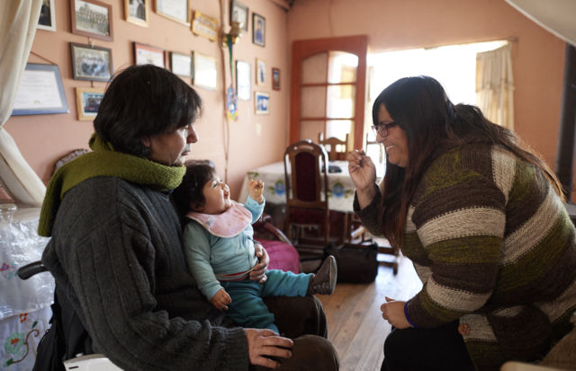
「ロドリゴはほんとうにいい人で，なぜこんな事故に巻き込まれたのか不思議でなりませんでした」とパオラは言います。ロドリゴと孫娘のエミリーと一緒に写真に写っている女性がパオラです。「でもじきに，わたしたちの祈りに，天の御父がどのようにこたえてくださっているか分かりました。」
ロドリゴは言います。「仕事を改めて探す必要があり，そのために御霊の導きを祈り求めました。神はこたえてくださいました。」
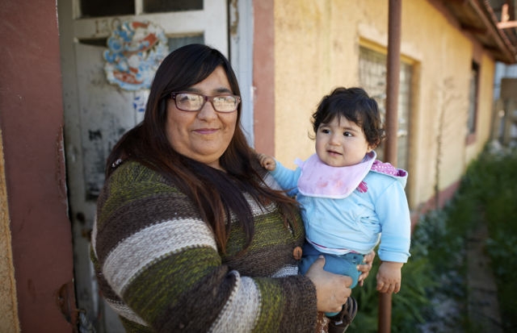
「ロドリゴにいつも言うんです。強いあなたをとても立派だと思うって。」孫娘のエミリーを抱いたパオラはそう言います。「わたしだったら，ロドリゴほど度胸はなかったでしょう。」
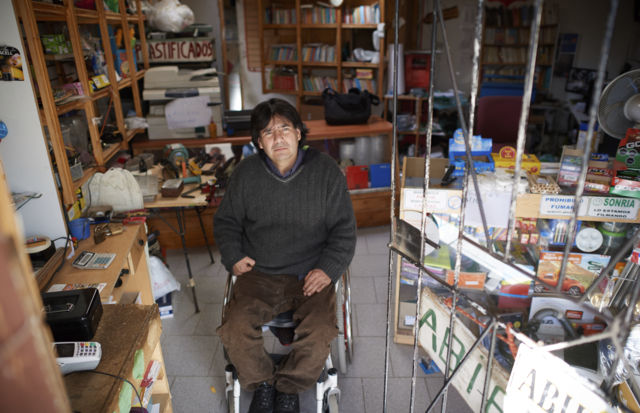
「福音に忠実であり続けてください。」人生を変えるほどの事故や出来事に見舞われた人に，ロドリゴはそう言います。「人生は福音がなければもっとつらくなります。」
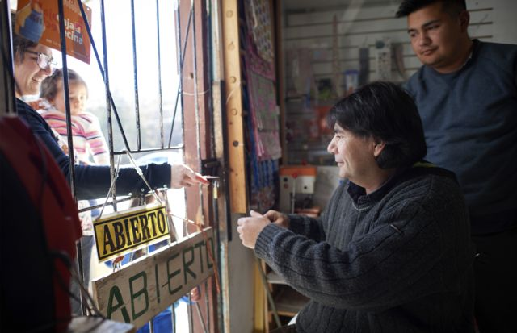
聖霊の導きと家族の支えのおかげで，ロドリゴは順調に在宅ビジネスを始めました。
工事現場での事故で歩けなくなったことにより，ロドリゴ・キンタニージャは，もう溶接工として働くことができず，そのほか様々なこともできなくなりました。それでもロドリゴは信仰を胸に，天の御父が自分と家族のために用意された計画を信頼して，前に進む決意をしました。
レスリー・ニルソン，写真家
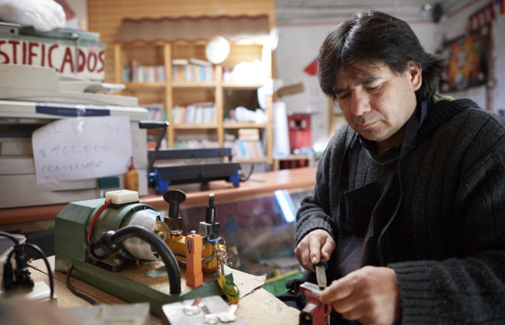
自分の身にとても悪いことが起こったとき，わたしたちにできるのは，次の二つのどちらかです。一つは，神に怒りをぶつけて教会を離れ，その後教会に一切かかわらないことであり，もう一つは，ひざまずいて祈り，成長を続けることです。
わたしは信仰を失いませんでしたし，「なぜこんなことがわたしに起こるのか」と自問することもありませんでした。そういうことをしないようにしました。
試練が訪れても天の御父がその試練を乗り越える道を備えてくださることを，わたしは知っています。回復の途上では，聖霊にともにいていただくことが不可欠でした。改めて仕事を探す必要があり，そのために御霊の導きを祈り求めました。神はこたえてくださいました。
事故に遭ってから，最初の1年は回復とリハビリに費やし，2年目は何をすべきかを決めるために使いました。少なくとも家族の基本的な必要を賄える仕事を見つけなければなりませんでした。体力をそれほど使わず，車椅子に乗ったままできる仕事です。
妻のパオラと，子供のリカルド，ニコルの助けを借りて，在宅ビジネスを始めました。まずは合鍵を作るサービスからスタートし，徐々にほかのサービスを増やしていきました。あちらこちらでノウハウを集め，実践で学びました。あれから9年がたった今，わたしたちは鍵屋の店舗と，印刷とラミネート加工をするコピーセンターを経営しています。
事故の前には，じきに自宅を手放すことになるかもしれないと思っていました。家の所有者である親戚が売却したがっていたのです。わたしたちは引っ越したくありませんでした。自分のワードを愛しているのです。
事故の後，祖母がこう言いました。「あの家のわたしの分の所有権を，あなたに譲ることにします。」父も同じことを言いました。おばの一人と，きょうだいの幾人かも，財産権を譲ってくれました。皆，こう言いました。「ここに好きなだけいていいんだよ。」これは天の御父からの祝福でした。
人生を変えてしまうような事故や出来事に見舞われた人たちに，わたしはこう言いたいと思います。「大変なこともあるでしょうが，教会にとどまってください。福音に忠実であり続けてください。人生は福音がなければもっとつらくなります。できるかぎり努力すれば，残りは天の御父が何とかしてくださいます。」
もっと読む
- 南アフリカのリブレッツウィ・ゴフリー・モクゲイトルがどのように神を信頼し，障がいを抱えて前に進んだかについては，lds.org/go/6196を御覧ください。
- 教会が提供する障がいに関するリソースについては，lds.org/go/9184を参照してください。
- 「信仰の肖像」のほかの記事は，lds.org/go/18で御覧になれます。
ミニスタリングの原則
ミニスタリングとは救い主が御覧になるように人を見ること
イエスは，特異な存在と見なされていた人々と多くの時間を過ごされました。彼らの天与の可能性を御覧になっていたのです。

「キリストと金持ちの若い役人」の一部，ハインリッヒ・ホフマン画
救い主のように仕えようと努めるとき，自分と共通点のない人に仕えるよう依頼されることがあります。それはわたしたちにとって学び成長する機会となります。
文化，教育，人種，経済状態，年齢，過去や現在の行状などが違うと，相手のことを知りもせずに判断してしまいがちです。この先入観こそ，偏見の中心にあるものであり，救い主はそのことについて警告しておられます（サムエル上16：7；ヨハネ7：24参照）。
違いにとらわれずに，救い主がなさるように人を見ることができるでしょうか。あるがままを，また将来なり得る姿を，愛せるようになるにはどうしたらいいでしょうか。
目に留め，慈しむ
永遠の命を得るにはどうしたらよいかと尋ねた，裕福な若者のなじみ深い話が聖書に記されています。「イエスは彼に目をとめ，いつくしんで言われた，『あなたに足りないことが一つある。帰って，持っているものをみな売り払って，貧しい人々に施しなさい。そうすれば，天に宝を持つようになろう。そして，わたしに従ってきなさい。』」（マルコ10：21）
七十人のS・マーク・パーマー長老が数年前にこの聖句を学んでいたとき，この物語のある部分が新たに突然くっきりと浮かび上がりました。
「『イエスは彼に目をとめ，いつくしん〔だ。〕』
この言葉を聞いたとき，主が時間を取って青年に目を留められた御姿が鮮明に思い浮かびました。目を留め る ---すなわち主は青年の心の奥を見通し，その善良さと可能性を認め，彼に最も必要なことを見抜かれたのです。
その後，簡潔な言葉が続きま す ---イエスは彼を慈しまれたのです。主はこの善良な青年に対して計り知れない愛と哀れみを覚え，彼を愛されるがゆえに，そしてその愛をもって，彼にさらに多くをお求めになったのです。わたしは青年の気持ちを想像してみました。持っているすべてを売り払い貧しい人々に与えるという，きわめて難しいことを求められているさなかでさえも，そのような愛に包まれていた青年はどのように感じたのでしょう。......
〔わたしは自問しました。〕『どうすればわたしがキリストのような愛で満たされ，わたしを通して〔人々〕が神の愛を感じ，変わりたいと望むようになる〔だろうか〕。どうすれば主が金持ちの青年に目を留められたのと同じように，〔周りの一人一人に〕目を留めることができるだろうか。彼らが今何をしていて，何をしていないのかだけでなく，実際にはどのような存在であり，どのような者になれるのかを見られるようになるだろうか。どうすればもっと救い主のようになることができるだろうか。』」
人々に目を留めることを学ぶ
救い主がなさるように人々に目を留めることを学べば，豊かな報いがもたらされます。以下に，この目標に向かって努力するときに役立つアイデアを幾つか紹介します。
- 相手を知るように努める
うわべだけ見るのでなく，親しくなるよう努力してください。人間関係を築くには時間と真摯な努力が必要であることを心に留めてください（2018年8月号のミニスタリングの原則「意義深い関係を築く」参照）。
- 自分自身を見詰め直す
故意にせよ無意識にせよ，相手を裁かないよう注意してください。思い込んでしまっていることがないか気をつけ，その人についてどうしてそのように感じるのかを理解するよう努めてください。
- 裁かない
人の価値は状況によって決まるものではないことを理解してください。その人の立場になって考え，自分が同じ状況に置かれたら人にどう見てほしいか考えてみてください。だれかの選択や行いを，その人に本来備わっている価値や天与の可能性と切り離すと，救い主が御覧になるようにその人を見る助けになります。
- 愛せるように祈る
名前を挙げてその人のために祈り，根気よく真の友情を育めるように祈ってください。自分の奉仕を祈りの気持ちで見直してください。自分がしていることと，その人がほんとうに必要としていることの間に隔たりはないでしょうか。
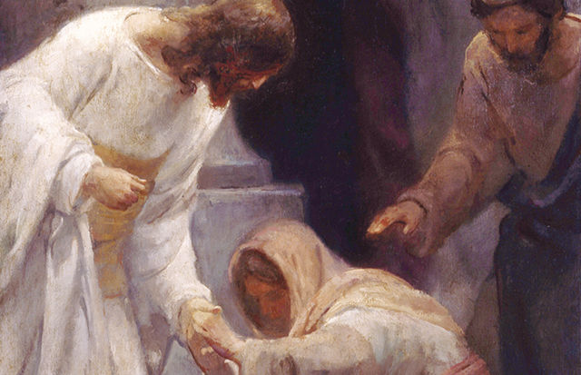
「癒された女」の一部，J・カーク・リチャーズ画
イエスは様々な背景を持つ 人 ---富んだ人，貧しい人，統治者，庶 民 ---とともに過ごされました。主はその外見の貧しさ，あるいは境遇の卑しさを目にした人々によって，しばしば誤って判断されました。「彼にはわれわれの見るべき姿がなく，威厳もなく，われわれの慕うべき美しさもない。......彼は侮られた。われわれも彼を尊ばなかった。」（イザヤ53：2－3）
行動を促す
あなたはだれに対する見方を変える必要があるでしょうか。その人への見方を変えるために何をしますか。
キリストのような見方
一人の姉妹が，隣人をキリストのような目で見ることを学んだという話を紹介しています。
「ジュリア（名前は変えてあります）はわたしの近所に住んでいましたが，友達がいないようでした。いつも険しい表情で，怒っているように見えました。それでもわたしは彼女の友達になろうと決心しました。形だけの友達でなく，真の友達に。見かけたらいつも話しかけ，彼女のしていることに関心を示しました。徐々に友情のきずなを育むことができ，わたしは喜びを感じました。
ある日，ジュリアを訪問して，教会に出席しないと決めた理由を尋ねることにしました。
近くに家族も親戚もいないことが分かりました。たった一人のきょうだいは遠くに住み，年に1度電話で連絡を取るだけでした。家族や教会についての恨みや怒りや失望など，思いの丈を吐き出す彼女の言葉に耳を傾けていると，わたしはこの姉妹に対する紛れもない慈しみと愛に圧倒されました。彼女の苦しみと失望が胸に迫り，どれほど寂しい生活を送っているのかに気づきました。背後でこうささやく言葉が聞こえたようでした。『わたしも彼女を愛しています。彼女を愛し敬いなさい。』
わたしは座って，彼女が話し尽くすまで耳を傾けました。彼女への愛と思いやりを感じました。この姉妹は愛されるとはどういうことか知らずに生きてきたのです。突然，彼女をよりいっそう深く理解することができました。わたしは訪問させてもらえたことを感謝し，彼女を抱き締めて，彼女への愛と敬意を胸にその場を離れました。その訪問でどれほどわたしが影響を受けたかを，彼女が知ることは決してないでしょう。天の御父はわたしの目を開かせ，より深い思いやりで人を愛する力が自分にあることを教えてくださいました。わたしは彼女に対して友人であるだけでなく家族にもなる決意を固めています。」
人の人生に関与するよう求められるのは神聖なことです。祈りと根気と御霊の助けがあれば，よりいっそうキリストのようなものの見方でかかわることができるようになります。
さらに知るために
以下から，もっと上手に人々を歓迎する方法を学んでください。
- 『リアホナ』2017年9月号にある「もっと上手にできる---人々を群れに歓迎する」を読んでください。
- 教会指導者がこれらの原則を説明する動画をlds.org/go/61911で御覧ください。
経験を共有する
皆さんのミニスタリングの経験，またはミニスタリングを受けた経験を募集しています。www.lds.org/liahona?lang=jpnにアクセスし，「投稿する」をクリックしてください。
より神聖な方法によるミニスタリング
ニール・L・アンダーセン長老
十二使徒定員会
2018年4月10日にブリガム・ヤング大学で行われたディボーショナルの説教"A Holier Approach to Ministering"（「より神聖な方法で行うミニスタリング」）から。
心を尽くして神を愛し，神の御手に使われる者になれるようにと祈るならば，主は御自身の特別な息子娘に出会えるようにしてくださることを，わたしは約束します。
The Narcissism Epidemic（『自己愛過剰社会』）という本は，現代のアメリカ文化を誇張する実例で始まります。
「あるリアリティーテレビ番組では，自分の16歳の誕生パーティーのプランを立てている少女が，メインストリートの閉鎖を要求します。マーチングバンドの先導で，自分がレッドカーペットの上を華やかに入場できるようにしたいと言うのです。また，My Beautiful Mommy（『マイ・ビューティフル・マミー』）という本では，今はやりの『母親若返り整形』の手術を受ける母親の幼い子供たち向けに，美容整形についての説明が展開されます。今では，夜外出するときに偽物のパパラッチを雇って自分を追いかけまわさせて写真を撮らせることも可能で，撮られた写真を表紙に使った偽の有名人ゴシップ誌を家に持ち帰ることまでできるのです。流行歌が『世界はわたしを中心に回っているの』と歌っても，何の皮肉も感じません。......赤ん坊は『スーパーモデル』という文字の刺しゅうが施されたよだれかけを付けて......『光もの』付きのおしゃぶりを吸い，親は現代風にアレンジしたThis Little Piggy Went to Prada（「この子ブタちゃんはプラダに行った」）という童謡の歌詞を読み聞かせます。」
イエス・キリストの弟子として，わたしたちは，人生が自分のためだけにあるという考え方をきっぱりと拒否し，次のように言われた救い主に従います。
「あなたがたの間で偉くなりたいと思う者は，仕える人となり，
あなたがたの間でかしらになりたいと思う者は，僕とならねばならない。
それは，人の子がきたのも，仕えられるためではなく，仕えるためであり，また多くの人のあがないとして，自分の命を与えるためであるのと，ちょうど同じである。」（マタイ20：26－28）
わたしたちは主の次の言葉を大切にします。
「わたしがあなたがたを愛したように，あなたがたも互に愛し合いなさい。」（ヨハネ13：34。ヨハネ15：12も参照）
「わたしの小羊を養いなさい。......わたしの羊を飼いなさい。」（ヨハネ21：15，16）
「あなたが立ち直ったときには，兄弟たちを力づけてやりなさい。」（ルカ22：32）
「弱い者を助け，垂れている手を上げ，弱くなったひざを強めなさい。」（教義と聖約81：5）
主の教会の会員たちの中で行われている，キリストのようなミニスタリングの例を挙げましょう。ブリガム・ヤング大学の学生が，最近，次のように書いています。
「わたしにはほんとうに苦しい時期がありました。ある日，ほんとうにつらくて泣き出しそうになりました。どうにかやっていけるようにと声に出さずに嘆願し，祈りました。まさにそのとき，ルームメイトがわたしに愛を伝えるメールを携帯に送ってくれたのです。聖句を分かち合って証してくれました。おかげでとても力づけられ，慰められて，絶望の中にいたのに希望が持てるようになりました。」
皆さんはすでにすばらしい方法でミニスタリングし合っています。これから伝える幾つかの話が，さらにそれに磨きをかける助けとなれば幸いです。最初に伝えたいのはこれです。「第二の戒めを守る前に第一の戒めを守ることを忘れない。」ある若者がイエスのもとに来て尋ねました。
「『先生，律法の中で，どのいましめがいちばん大切なのですか。』
イエスは言われた，『「心をつくし，精神をつくし，思いをつくして，主なるあなたの神を愛せよ。」
これがいちばん大切な，第一のいましめである。
第二もこれと同様である，「自分を愛するようにあなたの隣り人を愛せよ。」......』」（マタイ22：36－39）
より神聖な方法で隣人を愛し，周りの人を気遣ってミニスタリングする能力は，皆さんがどれほどしっかりと第一の戒めを守るかにかかっています。
もう一つの種類のミニスタリング
心を尽くして神を愛している人に見られる，特別に神聖なミニスタリングの賜物があります。そのような人はイエス・キリストと回復された福音を信じる信仰の上にしっかりと立っていて，確固として揺らぐことのない信仰があり（エペソ3：17；コロサイ1：23；1ニーファイ2：10；モーサヤ5：15；アルマ1：25；3ニーファイ6：14参照），きちんと戒めを守っています。
皆さんがすでに知っている状況について話しましょう。全世界的に，若い世代の信仰は弱くなっていて，特に特定の宗教を信奉する人は少なくなっています。わたしが1975年にBYUを卒業したころは，宗教に属している若い世代（18－24歳）は90パーセント近くいましたが，今では66パーセントです。「若い世代の優に3分の1は，どんな宗教の組織にも属していないのです。」
2001年に宗教学者ロバート・C・フラーは，Spiritual, But Not Religious（『霊的だが宗教ではない』）という本を書きました。正式な宗教組織の外で私的に霊的なことを行う傾向が20年前にはありましたが，今はこのような傾向すらあまり見られなくなっています。今日のアメリカ合衆国の若い世代の人々は，あまり祈らず，神や聖書をあまり信じておらず，戒めを守ることの大切さをあまりよく理解していません。この世界的な傾向がわたしたちすべての者，選民にまで影響を及ぼすことなどないと信じたくなるかもしれませんが，それは甘い考えです。
物質面と情緒面で周りの人を気遣うには，無私の心と思いやりに満ちた心がなければなりません。この気遣いは，福音の大切な部分です。教会の内外で，信仰のあるなしを問わず，善良な人々がそれを示しています。世界にはすばらしい，親切な人々がたくさんいて，わたしたちは彼らから学ぶことができます。
しかし，改宗した末日聖徒イエス・キリスト教会の会員に特有の，もう一つの種類のミニスタリングがあるのです。救い主の弟子として，わたしたちには，次に挙げるような方法でミニスタリングを行う機会があります。友達の信仰が揺らがないように助ける，モルモン書を毎日読むとほんとうに奇跡が起こることをルームメイトに優しく気づかせてあげる，教会の標準がただの決まり事ではなく，人を神に近づけ，人を幸せにする方法であることをワードの会員に示す。
写真／Getty Images
思いやりのある人は，タイヤの修理を手伝ったり，隣人を医者に連れて行ったり，悲しい思いをしている人と一緒に昼食を食べたり，ほほえみかけてあいさつすることで人をよい気持ちにしたりすることができます。しかし，第一の戒めに従う人は，このような大切な奉仕の行いをするだけではありません。それに加えて，戒めをよく守っている人を励まし，歩んでいた主の道を外れそうになっている人やその道に戻るために助けが必要な人に賢明な勧告を与えて，彼らの信仰を強めます。それを自然に行うのです。
互いに霊的なミニスタリングをし合えるようさらに努力することを，わたしは皆さんにチャレンジします。霊的なミニスタリングとは，クッキーを焼いたりバスケットボールをしたりすることから始まるかもしれません。しかし，結局のところ，より神聖な方法によるミニスタリングを行うには，自分の心を開き，信仰を振り絞って，友達がよく成長していることが分かったら勇気を出して励まし，弟子の務めと一致しないものが見られたり感じられたりした場合には不安を感じていることを伝えなければなりません。
独善的にならないようにしながらも，霊的な勇気をもって，具体的には，人々の信仰を強めることによって，より神聖な方法でミニスタリングを行おうではありませんか。考えやすくするために，以下の状況を想定してみてください。
- ある友達が途方もない時間をスマートフォンのゲームに費やしている反面，福音に関する会話をすることはまずない。
- ワードのある会員がポルノグラフィーの問題を抱えているらしい。
- 慎みがあるとは言えない写真を自撮りしてインターネットに載せることに膨大な時間を費やしている友達が何人かいる。
- モルモン書について熱く語っていたはずの友達が，まったくその話題に触れなくなった。
- 喜々として神殿に行っていたのに神殿に行かなくなってしまった人が，家族の中にいる。
- 預言者の勧告について信仰を込めて話していた友達が，預言者を批判するようになった。
- 神殿で交わした聖約を反映するような服装をすることに無頓着になってきた帰還宣教師がいる。
- 日曜日に教会以外の場所に行かなければならないと考えるようになった会員がワードにいる。
- 友達が小さなうそをつくようになった。
- 伝道から帰って来たときには目に光があったのにその光に陰りが出てきている人がいる。
- 神聖な事柄を冗談めかして言う友達がいる。
- デートがうまくいかなかったために「神様は自分を愛しておられない」と考えるようになった友達がいる。
- ふさわしさについて妥協的な考え方をしていたために信仰が揺らいでいて，悔い改める必要のある友達がいる。
以上の状況や似たような状況を想像することができますか。具体的な名前が頭に浮かぶでしょうか。使徒パウロは言いました。「わたしたちの戦いは，血肉に対するものではなく，もろもろの支配と，権威と，やみの世の主権者，また天上にいる悪の霊に対する戦いである。」（エペソ6：12）世界中で最も必要なことの一つは，天の御父と御子イエス・キリストを信じる信仰をさらに強くして，さらに積極的に戒めを守るようになることです。
個人的にミニスタリングを行う
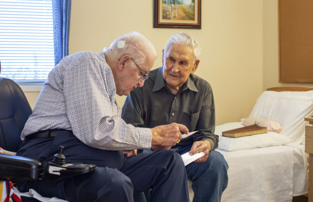
救い主の方法に従うならば，ミニスタリングのほとんどは，一対一で行います。井戸端のサマリヤの女に救い主は言われました。
「『この水を飲む者はだれでも，またかわくであろう。
しかし，わたしが与える水を飲む者は，いつまでも，かわくことがない......。』
女はイエスに言った，『主よ，わたしがかわくことがな......いように，その水をわたしに下さい。』......
女はイエスに言った，『わたしは，キリストと呼ばれるメシヤがこられることを知っています。そのかたがこられたならば，わたしたちに，いっさいのことを知らせて下さるでしょう。』
イエスは女に言われた，『あなたと話をしているこのわたしが，それである。』」（ヨハネ4：13－15，25－26参照）
御自分が神であることを宣言するときにも，イエスは個人にミニスタリングを行われました。
パンクしたタイヤの交換と違って，1度のミニスタリングで霊的な問題が解決することは，まずありません。信仰を立て直すには時間がかかりますし，会話と励ましが必要です。消火ホースで大量の水を一気にかけるというよりは，天から露が滴るように行うのです。人が神に立ち返って救い主とその贖罪に再び頼れるようにするには，ミニスタリングを繰り返し行わなければなりません。
主の方法でミニスタリングを行うには，聖霊の助けが必要です。ラッセル・M・ネルソン大管長は2018年4月の総大会で，このテーマについて力を込めてこう話しました。「導き，指示し，慰める，変わることのない聖霊の影響力がなければ，これから先，霊的に生き残ることはできなくなるでしょう。」
ネルソン大管長はこう付け加えています。「個人の啓示を受ける皆さんの現在の能力をさらに伸ばすように，強くお勧めします。」祈り，耳を傾け，考えを書き留め，行動を起こすようにと大管長は勧告しています。
より神聖な方法によるミニスタリングに，これを応用できるでしょうか。自分がミニスタリングを行える人について祈り，耳を傾け，考えたことを記録し，行動を起こそうではありませんか。
周りの人の信仰を育む機会を祈り求めましょう。助ける相手は，皆さんが知っている人だけとは限りません。イエスがナインのやもめにミニスタリングを行われたのは，その町に行く途中のことでした。それでもイエスは，彼女を見て深い同情を寄せ，亡くなったその息子をよみがえらせられたのです。このミニスタリングは，彼女の人生を変えました（ルカ7：11－15参照）。
ミニスタリングを行う機会が自分に訪れるよう祈り，耳を傾け，考えたことを書き留め，準備して，対象となる人が現れたら行動を起こせるようにしてください。
わたしは，詩篇の作者の次のような叫びに，ずっと胸を痛めてきました。「わたしは右の方に目を注いで見回したが，わたしに心をとめる者はひとりもありません。わたしには避け所がなく，わたしをかえりみる人はありません。」（詩篇142：4）このように感じている人を助けましょう。
御霊を受けるための時間を取る
聖霊に助けていただくためには，思いと心を備えなければなりません。今の時代，テクノロジー機器の使い方を管理し，制限する必要があります。アダム・オルターは，自身の著書Irresistible（『抵抗できない』）で，テクノロジーとソーシャルメディアへの依存行動について話し，インスタグラムの創業技術者の一人であるグレッグ・ホッフムースの言葉を引用しています。「クリックしたくなるハッシュタグは次々に出てきます。それは一つの生命体のようにそれ自身が生命を持ち，人はそれにとりつかれてしまう可能性があるのです。」
オルター氏はこう付け加えています。「インスタグラムは，ほかの非常に多くのソーシャルメディアのプラットフォームと同様に，底なしです。フェイスブックは果てしない投稿を誘い，ネットフリックスは次のエピソードに自動的に移ります。ティンダーは，さらに良いオプションを求めて次々にスワイプしたくなるようユーザーに仕向けます。『デザイン倫理学者』であるトリスタン・ハリスによると，問題は人の意志が弱いということではなく，『画面の向こうに1,000人もの人がいて，その人たちが人の持つ自己制御能力を破壊する仕事をしている』ということなのです。」
オルター氏は続けます。「フェイスブックやインスタグラムで『いいね』が付くと，神経のある部分が刺激されて，『ワールド・オブ・ウォークラフト』というゲームのミッションを全部クリアしたときや，自分のツイートが何百人ものツイッターユーザーにシェアしてもらえたときに得られるのと同じ快感が得られます。テクノロジーやゲーム，双方向機能を作成し，改良する人たちは，この点に非常にたけています。何百万もの人を対象に何千回ものテストを試行して，どこをどう変えたらうまくいくか，いかないかを調べています。背景の色や書体，音色をどう変えたら夢中にさせる効果を最大にして，不満を最小にすることができるかを研究しているのです。これが進化すると，その魅力は抵抗し難いほどになり，かつてしていたことの強化バージョンになっていくのです。2004年にフェイスブックは楽しいものでしたが，〔今日では〕依存性の強いものになっています。」
御霊がわたしたちの内にとどまるようにするためには，時間と余裕が必要です。スマートフォンを置くことができるようになってください。テクノロジーを使わない時間を意識的に設定するのです。
2018年4月の総大会で，十二使徒定員会会長代理のM・ラッセル・バラード会長はこう言いました。「あまりに多くの人が，電子機器を使ってほとんどオンラインの生活をしています。昼夜を問わず，彼らの顔は画面に向き，イヤフォンをしているので，御霊の静かな細い声を聴くことができません。電子機器から離れる時間を取らなければ，主の声を聞く機会を逃してしまうかもしれません。主はこう言われました。『静まって，わたしこそ神であることを知れ。』〔詩篇46：10〕さて，主によって霊感された最新技術を利用するのは何ら悪いことではありませんが，賢く使わなければなりません。」
互いに強め合う
妻のキャシーから受ける永遠の影響力は計り知れませんが，BYUの学部生だったころ，妻以外でわたしの霊的な基盤を大いに築いてくれたルームメイトが二人います。一人はわたしの伝道前，もう一人は伝道後のルームメイトです。一人はリード・ロビソンで，現在，BYUの組織行動学の教授です。伝道中に知り合い，その後ルームメイトになりました。リードはきちんと戒めを守り，預言者を愛し，救い主に対して揺るぎない信仰を持っています。彼のそんなところに，わたしをはじめ，周囲の人が皆力づけられました。そして，彼はその後45年間，ずっとわたしの模範です。
もう一人のルームメイトはテレル・バードです。現在，アメリカ合衆国ユタ州セントジョージに住んでいます。テレルに出会ったのは，アメリカ合衆国アイダホ州ポカテロの高校で一緒だったときです。一緒にバスケットボールをしていましたが，親しくなったのは，わたしが彼の成熟した霊性に気づいてからでした。霊的な事柄に関する意見や，本で読んだり学んだりした人生の原則を，彼は包み隠さず話してくれました。17歳の口から出たとは思えない内容に驚きました。BYUでルームメイトになることは，彼と二人で決めました。
パソコンのない時代で，タイプライターを使っていました。テレルは自分にとって大切な聖句や人格形成に良い言葉を取り出しては，それをタイプして小さな箱に入れていました。小まめにそこから引き出せるようにしていたのです。聖句と引用文を1,000以上持っていることは彼にとって珍しいことではなく，彼はその多くを暗記していました。わたしは毎朝4時から7時まで図書館の清掃の仕事をしていて，クラスも目いっぱい取っていましたが，テレルを見ていて，わたしも自分のファイルボックスを作り始めました。
50年も前なのに，今でも覚えている言葉を一つ，紹介しましょう。
思いは，ものを形作る最高の力
人とは思いであり，人は常に思いを働かせる
思いは思考の手段であり，望むものを形にする
思いは千の喜びと千の悪をもたらす
陰で考えたことは表に表れる
周囲のものは，人の思いを映す鏡にすぎない
もちろん，次の力強い聖句も覚えています。
「わたしはよみがえりであり，命である。わたしを信じる者は，たとい死んでも生きる。
また，生きていて，わたしを信じる者は，いつまでも死なない。」（ヨハネ11：25－26）
BYUの1年生だったわたしの思いにテレルが植え付けてくれた聖文と知恵ある言葉は，わたしの全人生に影響を与えてきました。リード・ロビソンとテレル・バードがわたしの大切な時期にわたしの霊的な面に心を配ってくれたことに，感謝しています。
隣人のトーマス・L・ケイが，こんな詩を書いています。
安らぎを与えてくれるすべての人について神に感謝します。
人を心から気遣う人，
元気のない人を抱き締め，
彼らのために祈る人がいることを，神に感謝します。
心の声を聞き，
言葉に耳を傾けてくれる人がいることを，神に感謝します。
表情と優しい手の感触が
全世界の何よりも大切だと知る人がいることを，神に感謝します。
垂れている手を上げ，
弱くなったひざを強める人，
ひそやかなミニスタリングで
人を立ち直らせる人がいることを，神に感謝します。
愛する友であり，わたしと同じ弟子である皆さん，わたしの確かな証を申し上げます。救い主が生きておられることをわたしは知っています。救い主は復活され，この聖なる業を導いておられます。ネルソン大管長は，この地上における救い主の油注がれた預言者です。わたしたちがこの地上にいる時間は，永遠の見地から見て重要です。
皆さんが心を尽くして神を愛し，神の御手に使われるようにと祈り，個人的にミニスタリングを行い，啓示を受ける能力を高め，聖霊の影響力を信頼するならば，主は御自身の特別な息子娘に出会えるようにしてくださり，皆さんが彼らの仕える天使となって永遠に彼らに祝福を与えることができるようにしてくださいます。皆さんはより神聖な方法でミニスタリングを行うようになるでしょう。
現世でいちばん大切なこの道を歩み続ける皆さんにとって，これが大切な勧告となるよう祈ります。救い主について，また皆さんが救い主にとって永遠に価値のある存在であることについて，わたしの揺るぎない確かな証を伝えます。救い主が再び来られて，わたしたちを息子娘として，御自身の弟子として抱き締めてくださることを，証します。
主の癒しを人々が受けられるよう助ける
メリリー・ブラウン・ボヤック
筆者はアメリカ合衆国ユタ州在住です。
わたしたちは，肉体的，精神的，霊的な病に苦しむ人々に主の癒しの祝福をもたらすのを助けるときに，癒し手の技を施します。
The Release,（「解放」）ジェネディー・ページ画，複製は禁じられています
ある日曜日に，次の聖句を読みました。「まことに，まことに，あなたがたに言う。以上がわたしの福音である。あなたがたは，わたしの教会で行わなければならないことを知っている。わたしがするのを見たその行いを，あなたがたもしなさい。」（3ニーファイ27：21；強調付加）
わたしは「キリストが地上でされた業にはどのようなものがあるだろうか」と自問しました。おもに二つのものが思い浮かびました。奉仕と癒しです。奉仕は自分にもできそうですが，癒しはどうでしょうか。人を癒す能力が自分にないことは確かでした。それとも，あったのでしょうか。
そのころわたしは，深刻なアレルギー反応を起こして受けた手術から回復しているところでした。わたしは即座に，自分の癒しの過程に携わってくれた人々を思い起こすと，大勢の人が思い浮かびました。彼らがわたしの癒しを助けることができたなら，わたしも人のために同じことができないでしょうか。
だれもが癒し手の技を習得することができます。わたしたちの周りには，肉体的，精神的，霊的な病に苦しんでいて，わたしたちの助けにより祝福を受けられる人が大勢います。
病人を見舞う
モーサヤ第4章26節にはこのように記されています。「自分の持っている分に応じて，それぞれ持ち物を貧しい人に分け与えるようにしてほしい。例えば，飢えている人に食べさせ，着る物のない人に着せ，病人を見舞い，各々の入り用に応じて霊的にも物質的にも助けを与えることである。」
肉体的なものであれ，精神的，霊的なものであれ，病を負っている人は，とても孤独です。快復しようと，寝室や病室で長い孤独な時間を過ごすため，霊は落胆しがちです。暗闇が徐々に深まるときに，思いやりのある友人や家族の見舞いを受けることで，生活に光がもたらされるかもしれません。
どのように病人を見舞うかも重要です。癒しの過程でどのように助けを得たかという質問を尋ねたところ，数人の女性が回答してくれました。アメリカ合衆国のアリゾナ州に住むジュディはこのように書いています。「耳を傾けることは，困難なときに大きな助けになります。耳を傾け，裁かないことです。」忍耐をもって，心を込め，愛をもって耳を傾けることは，癒しに向けて努力している人にとって貴重な助けです。
アメリカ合衆国のカリフォルニア州に住むリンダは，友人の見舞いにどのように助けられたか述べています。「人生における特別な人たちのことを思い出します。特に，よく耳を傾け，御霊の穏やかな勧告を伝えてくれた人たちのことが思い浮かびます。30歳で5人の幼い子供たちを残して夫に先立たれたときに，親友のカレンのおかげで，天の御父と救い主の愛をさらに深く感じました。カレンは常にわたしの必要に気づき，『聞くことのできる耳』を持っていました。わたしが神の娘として持っている美しいきずなについて，カレンが常に思い出させてくれたので，孤独だと感じたことはまったくありませんでした。」
ミニスタリングブラザーとシスターは特にこの癒し手の技を施すことができます。苦しんでいる人の必要に気づくことは大切です。見舞う相手がとても疲れているため，短い訪問が適切なときもあります。あるいは孤独で退屈なために，長い訪問が必要を満たすこともあります。また，本人の性格に合わせることも重要です。プライバシーと静けさを望む人もいれば，人とよく交わり，助けを受けたいと望む人もいます。まず本人の必要を見極め，それに応じて手を差し伸べなければなりません。
互いに重荷を負い合う
モルモン書の中でアルマは，「あなたがたは神の羊の群れに入って，神の民と呼ばれたいと願っており，重荷が軽くなるように，互いに重荷を負い合うことを望〔んでいる〕」かと信者に尋ね，救い主の模範に従う決意について非常に雄弁に語りました（モーサヤ18：8）。
わたしたちは一人一人，実に様々な重荷を背負っています。病気のときや，精神的な病や霊的な困難に苦しんでいるとき，重荷に対処することは非常に難しくなります。癒し手の技の一つは，苦しんでいる人が重荷を負うのを助けることです。
アメリカ合衆国のユタ州に住むシャノンは，隣人がどのように自分を助けてくれたかについて述べています。「幼い息子を埋葬した日に，墓地から戻って来ると，わたしたちが葬儀に出席している間に隣人が集まって，我が家の庭を見違えるようにしてくれたのを目にしました。美しい低木や樹木，花を植え，新しい芝まで張ってくれたのです。わたしたちが想像を絶する悲しみを経験しているさなかに，彼らの思慮深い愛の行いと助けを受けたことで，わたしたちの癒しの過程が始まりました。毎年我が家の美しい庭がよみがえる度に，愛と命は永遠だということを思い起こしました。ほんとうに神聖で象徴的なこの経験を決して忘れることはないでしょう。」
乳がんだと診断された当時，わたしは扶助協会会長として奉仕しており，市議会議員の再選に立候補していました。夫は失業中で，この時期はほかにも多くの深刻な試練に遭っていました。顧問たちは「互いに重荷を負い合う」ことを心に刻み，わたしが負っていた重荷を分散するのを助けてくれました。ビショップもわたしの責任の一部を肩代わりしてくれました。夫は，やらなければならない料理と家事の多くを引き受けてくれました。大勢の人が，重荷を取り去るのではなく，ともに重荷を負うことにより癒し手の技を施してくれるのを目にして，わたしは心底へりくだりました。
慰める
アルマは，キリストの弟子は「悲しむ者とともに悲しみ，慰めの要る者を慰める」とも教えました（モーサヤ18：9）。
慰めを与えることは，共感，思いやり，思慮，配慮，愛，慈愛を包含します。慰めを与えるとは，病人や苦しんでいる人々を愛の腕で包み込み，苦しみに直面している人々を助けるということです。
ルアン（仮名）は，霊的，道徳的な苦難に直面して，自分を慰めてくれた人たちとの経験に思いをはせました。「彼らは今のわたしの先にある確かな可能性，つまりもっと偉大で賢明で親切になれる可能性を見てくれました。わたしは以前の自分を振り返って，自分の無知のために恥ずかしさで少々身が縮む思いがすることがあります。自分の背きと罪深さに対して少し恥ずかしく思います。しかし，恥ずかしさの痛みの後には必ず癒しの乳香を頂きます。それは，恵みと憐れみ，赦し，愛です。こういったものを豊かに与えてくれる人々が自分の周りにいたことを理解すると，痛みは消えます。そして，癒されるよう助けてもらっていたことを理解します。わたしの周りに安全な環境を作ってもらっていた，という方が正しいかもしれません。救い主，すなわち癒し主が恵みの繭を作ってくださり，その中でわたしに働きかけてくださったのです。わたしとわたしの心は変わりました。」
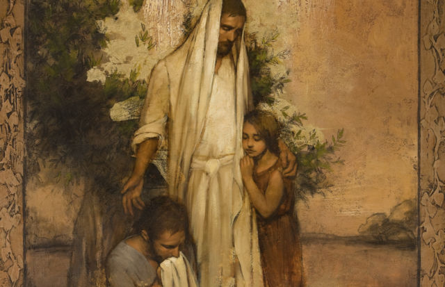
「ギレアデの乳香」の一部／アニー・ヘンリー・ネーダー画
病人を慰めるうえで重要なことは，その人を癒し主に近づけることです。ユタ州のサブリナはこのように述べています。「神を見いだし，神のもとに戻るよう助けてくれる人が与える癒しに勝るものはありません。それは，すでに知っていることをただ思い出させてくれることかもしれません。必要以上に頑張りすぎていたり，全部を一人で背負い込んだり，ほんとうの意味で神に頼っていないことを思い出させてくれるのです。」
病人を慰め，彼らが前向きでいられるよう助けるには，御霊に対する感受性が必要です。あるとき，わたしは何か月間もよく眠れず，通常，一晩で平均2，3時間，細切れに眠るだけでした。わたしは不安と疲労に大いに苦しみ，何人もの医師に診てもらいましたが，無駄に終わりました。とうとう，友人が末日聖徒の医師を紹介してくれて，この医師は即座に適切な診断を下してくれました。しかし，医師が次に発した言葉に驚きました。「メリリー，あなたが行わなければならない最も大切なことは，不安を神にゆだねることです。」医師はそう言って，毎日少しの時間，「生けるキリス ト ---使徒たちの証」について瞑想するよう勧めました。
何回かこの瞑想をしてみましたが良い成果は得られませんでした。しかしわたしは，どうしても癒されたいと願っていました。翌日，わたしはある力強い言葉について静かに瞑想していました。「わたしたちはイエス・キリストのたぐいまれな生涯が現実のものであり，この御方の偉大な贖いの犠牲が無限の力を有することを証します。」偉大な癒し主についての証について深く考え始めると，感動を覚え，心に慰めと平安が生まれました。
注意を払う
イエスが行われたように癒しの業を行うために聖文を研究すると，イエスがあることを繰り返し行っておられたことが記されています。それは，イエスが周囲の人々に注意を払われていたということです。
キリストは人々を気にかけておられました。文化的なタブーにもかかわらず，サマリヤ人の女性と言葉を交わされました。時間を取って子供たちを祝福されました。取税人と罪人とともに食事をし，重い皮膚病の人と，社会からのけ者にされている人に仕えられました。イエスは一人一人に目を向けられました。
主の癒し手の技を習得しようとするキリストの弟子であるわたしたちは，キリストの目で人々を見るとよいでしょう。時間を取って，あいさつをしたり，ほほえんだり，元気にしているか尋ねたりすることができます。孤独や落胆，病気，弱さ，苦しみを抱えた周囲の人にとって，わたしたちの行いがどのような形で癒しの乳香となるかは分かりません。ささやかな愛の仕草でさえ，大きな影響を与えることがあります。
キリストの業を行い，人々の癒しに携わるときに，大きな祝福がもたらされます。キリストが言われたように，「わたしの兄弟であるこれらの最も小さい者のひとりにしたのは，すなわち，わたしにしたので〔す〕。」（マタイ25：40）わたしたちを癒してくださった御方のために，自分で気づいている以上に何度も愛の御腕に包み込んでくださった御方のために，また主の贖いという癒しの乳香を下さった御方のために，わたしたちは兄弟姉妹の癒しを助けるためにささやかな努力をささげることができます。これこそが，癒し手の技です。
わたしたちは主の手
「キリストは人を教え導く方法を完璧に御存じでした。救い主が御手を差し伸べられると，触れられた者は勇気づけられ，成長し，強くなり，その結果，さらに善い人になったのです。
わたしたちが救い主の手なのであれば，同じことをするべきではないでしょうか。」
十二使徒定員会 ディーター・F・ウークトドルフ長老「『あなたはわたしの手である』」『リアホナ』2010年5月号，70
自立することで得られる祝福
花と経済的な安定
メチェル・ウォール
筆者はアメリカ合衆国アーカンソー州在住です。
主はわたしの可能性を増し，能力を伸ばし，そしてわたしを自分自身の力でなれる以上の者にしてくださいました。
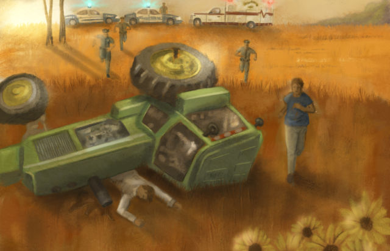
イラスト／デビッド・グリーン
わたしは，大学を卒業していないことがいつも心に引っかかっていました。夫に何か起こったとしても経済的に家族を養う備えがないことは分かっていました。
そんなときに，思いもよらないことが起きたのです。衝撃的な，人生を大きく変える電話がありました。
「救急車を呼んでくれ！」と，苦しそうに夫が叫んでいます。「トラクターの下敷きになった！」
わたしは救急に電話してから，夫が作業をしていた場所を目指して大急ぎで向かいました。アメリカ合衆国アーカンソー州ピーリッジにあるわたしたちの所有地に向かうために砂利道を走る緊急車両の渋滞の列を通り抜けました。夫のバリーは生きていましたが，ひっくり返ったトラクターのエンジン部分の下敷きになっていました。
救急隊員は，油圧式の救急機材を使ってトラクターを持ち上げ，バリーを引っ張り出しました。ディーゼル燃料に浸った夫の両脚は数か所折れているようでした。バリーは救急病院に運ばれ，神権の祝福を受けてから，両脚のレントゲン写真を撮りました。
驚いたことに，骨はまったく折れていませんでした。しかし，バリーは片方の脚の裏側にディーゼル燃料でひどいやけどを負っていました。また，押しつぶされたことで，両方の腎臓が損傷していました。命の危険がありました。
バリーは病院で予断を許さない5日間を過ごした後，ようやく血中毒素のレベルが下がり始めました。数か月間，包帯交換と皮膚移植，外科手術，高圧酸素治療が続きました。体調がもう十分に良いと感じた時点で，バリーは自宅でセールスの仕事を再開しました。
「勤め口などありませんでした」
この経験が転機となりました。バリーがいなくなったら自分は何ができるだろうかと考えながらその後の数年を過ごしながら，わたしはボランティア活動を行い，研修会に出席し，幾つかパートタイムの仕事をしました。しかし，わたしにはお金を稼げる技術がなく，勤め口などありませんでした。
牧場に住んでおり，牧草地があって多少の動物がいましたので，わたしは職業としての牧畜について調べ始めました。ある日，一つのことを思いつきました。それは花です。花の栽培について調べた後，それを試してみることにしました。わたしは花の生産者のための大会へ行き，牧場を花の畝に切り替える準備をしました。その後2016年11月に，自営業を始めて展開する方法を教えてくれる自立支援サービスに登録しました。
自分のフラワーショップ
12週間のコースは，まさにわたしが必要としていたものでした。わたしには基本的なビジネスプランとたくさんの楽しいアイデアがありましたが，組織力がなかったのです。クラスでは，以前に考えもしなかったアイデアがどんどん湧いてきました。わたしはそのアイデアを一つずつ実行しました。最初の年に花を栽培して売る仕事を始めたとき，クラスで学んだ提案と原則が役立って，以下のことができました。
- 低利のビジネスローンを見つける。
- 農家の市場やフラワーショップを含めてマーケットを広げる。
- 顧客を増やすために自分たちの農園で幾つかのイベントを行う。
栽培を始めてから1年が経過した2017年末に，フラワーショップ向けの販売にはあまりにも時間がかかりすぎることに気がつきました。「自分でフラワーショップを開いたらどうだろうか」と考えました。廃業したフラワーショップが地元にあり，その建物が気になっていました。それで，わたしたち夫婦はそれを購入して，美術品と地元の工芸品も売るフラワーショップを開いたのです。そのほかに，観葉植物のレンタルとインテリア観葉植物のデザインビジネスも始めました。
わたしは自分の店と，地元の空港にあるコーヒーショップとブティックストアと売店で自分の栽培した花を売っています。毎日，必要な分だけ，花を切り出しています。
主が気遣ってくださる
主がわたしの仕事を気遣ってくださるという証がわたしにはあります。わたしが経済的安定を得られるように，また都合のつく時間に働きたいと思っている女性がパートタイムの仕事ができるように，さらに学生が学校に通いながら働けるように，主は助けてくださっています。娘の一人が花の栽培を管理し，二人の息子が温室を建てる手伝いなど農園の作業の多くを行っています。バリーは夕方と週末に手伝い，重い物を運んでくれています。
わたしたちは皆，互いに支え合い，一緒に働いています。それはかかわる者全員にとって祝福です。わたしはいつも忙しいですが，それでも家族や教会の召し，ミニスタリングの務め，またボランティア活動のために時間はあります。
種や球根を植えるときから花をお客様に渡すときまで働くことで，とても大きな達成感を得ています。主がわたしの能力を伸ばし，そしてわたしを自分自身の力でなれる以上の者にしてくださったことを，わたしはみじんも疑っていません。
新約聖書から学ぶ教訓
マルタとマリヤ
カミール・フロンク・オルソン
ブリガム・ヤング大学古代聖典学名誉教授
わたしたちが選ぶ仕え方はどうであれ，心と思いを尽くしてキリストを受け入れてキリストに従うことが最も重要です。
エルサレムにいる多くの者が救い主の身元について戸惑いの言葉を述べたときに，イエスは，「神のみこころを行おうと思う者であれば，だれでも，......教が......わかるであろう」と告げられました（ヨハネ7：17）。ただ教えを学ぶだけでなく，イエス・キリストがどのような御方であられるかを学んで，主の弟子になりたいと思うならば，わたしたちは信仰を行動に移さなければなりません。マルタとマリヤの物語は，わたしたちの生活の中で救い主に仕える方法が一つではないことを示しています。
この教えを説かれてから間もなく，イエスは，福音について教えるために，何人かの弟子とともにベタニヤにあるマルタの家へ行かれました。マルタは，自分の第一の務めは客人を親切にもてなすことだと考えて，恐らく食事と宿を提供したのでしょう。一方，妹のマリヤは，イエスの足もとに座って，イエスの話を聴いていました（ルカ10：38－42参照）。この姉妹の主への仕え方の違いは，弟子としての務めを異なる方法で果たす人々を尊ぶべきだということを教えています。またこの物語におけるイエスの教えは，男性と同様，女性もどのような方法で仕え，どのような方法で弟子としての務めを果たすかを自由に選ぶことができるという，主の見方を明らかにしています。
与えることによって仕える
ルカは，マルタとマリヤのことを述べる直前に，良いサマリヤ人のたとえを記録しています。この話の中で，救い主は，助けを必要としている人には食べ物を与え，宿を取り，手当てをするなどして思いやりを示すよう教えておられます（ルカ10：30－37参照）。マルタが信仰を行いに移したときに，「忙がしく」していたということは（ルカ10：40），彼女がこの原則を受け入れて理解していたことを示しています。
イエスは，いちばん偉い人はほかの人に仕えるという御自分の教えを模範で示しながら（マタイ20：26－28；ルカ22：26－27参照），奉仕の生涯を過ごされました。マルタはイエスに仕えたいという思いを持って接待したのです。マルタとマリヤの話は，仕え，学ぶことによって真実の信仰と弟子としての務めの模範となる二人の女性を示しています。マルタが奉仕によってキリストへの愛を示したように，わたしたちも，救い主への愛と，進んで主の福音を学んでそれに従う気持ちを大切にして，周りの人々に奉仕することができます。
わたしたちは奉仕をするときに，奉仕をする別の方法があること，そしてそれを行っている人を裁いてはならないということを心に留めておく必要があります。マルタが「心をとりみだし」たときに（ルカ10：40），彼女の対応は争いを引き起こし，善意による救い主の訪れを台無しにしてしまってもおかしくないものでした。
もてなす能力と責任感があるにもかかわらず，マルタは，忙しさで心を乱し，ゆとりがありませんでした。そしてイエスに苦情を言ったのです。「主よ，妹がわたしだけに接待をさせているのを，なんともお思いになりませんか。わたしの手伝いをするように妹におっしゃってください。」（ルカ10：40）彼女の苦情には，自分だけが奉仕しているという思いが込められています。マルタは，マリヤと救い主御自身を含むほかの人々がそのときに示した，別の形での奉仕が理解できなかったのです。マルタは与えるという原則に従いましたが，その態度は御霊を招くのに適切なものではありませんでした。今日，わたしたちも生活の中で，自分の行動，と自分の態度でほかの人々に愛を示すことができます。
受けることによって仕える
イエスは，接待しようとするマルタの努力と，その結果として生じた不満を受けとめて，次のように注意されました。「マルタよ，マルタよ，あなたは多くのことに心を配って思いわずらっている。」（ルカ10：41）救い主の言葉は，マルタが選んだ接待の方法の価値を下げるためのものではありませんでした。そうではなく，救い主はマリヤが持っていた，耳を傾けて学ぶことによって仕える権利を認められたのです。マリヤの行動は，主に従いたいと思っているすべての人にとって，自分が選ぶ奉仕の仕方とは別に，何が最も重要であるかを示しています。
マリヤは御言葉を受け入れることによって，自分に奉仕する機会を救い主に与えたのです。マリヤの模範は，救い主の足もとに座って御霊により学び，成長することで，救い主に愛を示すことができるということを示しています。
必要なことは一つ
マルタの葛藤に対する返答はこうでした。「無くてならぬものは......一つだけである。」（ルカ10：42）この言葉には簡潔さの深遠な力が暗に示されていますが，簡潔かどうかは，わたしたち各人で異なります。「無くてならぬ」の基準は，わたしたちが何を行うかではなく，わたしたちの動機の中にあります。わたしたちが選ぶ仕え方はどうであれ，重要なのは，心と思いを尽くしてキリストを受け入れてキリストに従うことです。
「マルタの方法」で仕えることが最善である場合もあれば，「マリヤの対応」が適切であることもあります。あるいは，そのいずれでもないということもあるかもしれません。わたしたちはマルタとマリヤの模範を自分の生活に取り入れることができます。そして，最善の方法で仕えるために御霊の導きを求めることができるのです。
キリストに従おうとする強い信念が最も重要であるということを心に留めて，自分が選んだ方法で仕えているときの自分の態度について考えてみてください。救い主の足もとにいる自分を常に意識できますように。
神に導かれる弟子としての務め
ディーン・M・デイビーズビショップ
管理ビショップリック第一顧問
2015年11月3日，ブリガム・ヤング大学で行われたディボーショナルでの説教"God Will Use You, God Will Bless You"（「神はあなたを使われ，あなたを祝福される」）から。
皆さんが愛する救い主のまことの弟子になろうと努めるならば，天の主なる神は皆さんの道を導いてくださいます。
イラスト／ケリー・モーリス
わたし自身が若いころに答えの欲しかった二つの疑問について，話したいと思います。
第1は，もしも生涯を神の務めにささげるならば，神は自分の歩みを導き，神の義にかなった目的のために自分を使ってくださるだろうか，という疑問であり，第2は，救い主に従い，弟子としての務めの道を歩むならば，主は自分を見守り，導き，祝福し，そして主の目的のために自分を使ってくださるときの喜びと達成感で自分を満たしてくださるだろうか，という疑問です。
愛する兄弟姉妹の皆さん，救い主に思いを寄せて，主から命じられた道を信仰と思いやりをもって歩むように努めるならば，皆さんが今は想像もできない方法で主が皆さんを使ってくださることを，わたしは知っています。
「でも，自分は決して特別な人ではありません」と，皆さんは言います。「あらゆる点で普通の人間です。特に頭が切れるわけではなく，雄弁でもなく，身なりがよいわけでもなければ，マナーがよいわけでもありません。神はどのようにわたしを使ってくださるというのでしょうか。」
時の初めから，天の御父は，普通の人々に手を差し伸べ，御自分の目的のために彼らを使ってこられました。使徒パウロが昔のコリント人に書き送った次の言葉は，現代の皆さんに向かって述べている言葉でもあります。
「神は，知者をはずかしめるために，この世の愚かな者を選び，強い者をはずかしめるために，この世の弱い者を選び，
有力な者を無力な者にするために，この世で身分の低い者や軽んじられている者，すなわち，無きに等しい者を，あえて選ばれたのである。
それは，どんな人間でも，神のみまえに誇ることがないためである。」（1コリント1：27－29）
救い主が地上に主の教会を回復される時が訪れたときに，正規の学校教育をほとんど受けていない，取るに足りない少年を選ばれたのは，なぜだと思いますか。
神が農夫ギデオンに告げて部隊を次々に帰郷させて，最後に300人だけを残し，その300人で数限りない敵に立ち向かわせられたのは，どうしてだと思いますか（士師7：1－25参照）。
救い主が一人の漁師を選んで御自分の使徒の頭とし，御自分が去った後に教会を指導する者とされたのは，なぜだと思いますか（マタイ16：18参照）。
第1の理由はこれです。「〔主〕が見るところは人とは異なる。人は外の顔かたちを見，主は心を見る。」（サムエル上16：7）
第2に，神はごく普通の粘土を取って，そこから最高の作品を造ることがおできになるからです。「もし，神がわたしたちの味方であるなら，だれがわたしたちに敵し得ようか」という言葉のとおりです（ローマ8：31）。
第3に，だれも誇って「自分の力でこれを行った」と言えないように，神は弱い者をお選びになるのです。
取るに足りない漁師であったペテロが少数の信奉者を伴い，彼らを指導して力強い教会を築き上げると，人々は声を上げて，神に感謝します。
数千人から成る軍隊が300人の部隊に打ち負かされると，人々は神をたたえます。
辺境の地に住む少年が農具を置いて，聖書以来最も人を鼓舞し，人生を変えた書物を翻訳すると，人々は，人の知性ではなく，神の力に栄光を帰します。
天の御父に必要なのは，皆さんが力ある人，知性豊かな人，あるいは評判の良い人であることではありません。御父にとって必要なのは，皆さんが主に心を傾けて主に仕え，周りの人々に思いやりをもって手を差し伸べることによって主を敬うよう努めることなのです。
聖なる御霊のミニスタリング
皆さんに強調したい第2のことは，皆さんが誠実に力強く神に従うならば，神は皆さんの理解できない方法で祝福を与えてくださるということです。
2006年に，ゴードン・B・ヒンクレー大管長（1910－2008年）と大管長会は，エルサルバドルのサンサルバドルに神殿を建てることを検討すべきだと判断しました。わたしたちは旧市街のすべての街区を含め，多くの地所を見て回りました。車で次から次へと回りましたが，どれもふさわしいと思われませんでした。
最後に，市の西部にある開発途上地区のそばを通りました。わたしはその地区で何かを感じ，幾つかのブロックを歩いて回りました。すると，塀で囲まれた一つの地所に特に興味を引かれたのです。所有者たちに連絡を取りましたが，その地所は売れないという返事で，わたしは帰国しました。
しかし，預言者がサンサルバドルに神殿が建つだろうと言っていたため，わたしは別の地所を見るために再度訪問しました。塀のある地所に再び心を引かれる自分に気づき，もう一度連絡を取りました。所有者たちからは，その地所は売れないと再度言われました。
わたしはまた帰国しましたが，そこが神殿の建つべき所だという気持ちを振り払うことができませんでした。そこで，その地所に住む家族と連絡を取り，会うだけ会ってもらえるだろうかと尋ねました。そして了承を得ました。再びわたしは，友人であり教会の不動産課の職員であるロバート・フォックス兄弟を伴ってサンサルバドルに向かいました。その日の朝，わたしたちは，一日が始まる前に部屋でひざまずいて祈り，主の助けを願いました。
車でその家の門をくぐったときに，まるで聖なる園に入ったかのように感じました。木々や花々があり，外の騒音は門の内側には聞こえてきません。ロベルト・ドゥエニャス氏とその兄弟，ロベルト氏の二人の息子がわたしたちを待っていました。あいさつを交わすと，わたしたちを先祖代々の家に案内してくれました。大きな広い家でした。
わたしたちは教会の大管長からの割り当てで来ていること，そしてそこに神殿を建てることによってその国と教会員に祝福をもたらしたいと大管長が思っていることを彼らに告げました。わたしは幾つかほかの神殿の写真を見せました。そして，彼らの地所，先祖代々の家がまさにその場所だと感じたことを話しました。
再度断られても少しも驚きませんでしたが，わたしたちは交渉しなければなりませんでした。ほぼ1時間にわたって，値引きをしない完全買い取りや地所の交換をはじめ，考えられるほかのあらゆる選択肢を提示して説得しました。しかし，彼らは意思が固く，すべての申し出を断ったのです。
わたしたちはできることをすべて行ってきました。準備をしてきました。最善を尽くしてきました。それでも十分ではなかったのです。
わたしは心の中で懸命に祈りました。「お父様，何を語り，何を行うべきか分かるように，どうぞお助けください。」
結局，この訪問の成果がなかったことが明らかになりました。何事も彼らの心を変えられないことは明らかでした。ところが，わたしたちが立ち去る準備を始めたときに，何かが起こりました。主の御霊がその部屋に訪れたのです。それは明らかでした。部屋にいる全員がそれを感じたのです。それはわたしがかつて感じた中で最も力強い霊的な経験の一つです。
教会員ではないロベルト・ドゥエニャス氏が涙を流し始めました。ドゥエニャス氏は自分の兄弟に向かってこう言いました。「先祖代々の家を売ることができないとしたら，通りの向かいにあるいちばん良い土地を売れないだろうか。」
兄弟はそれに同意しました。それからわたしたちは別の地所について話し合いました。彼らは先祖代々の家から大通りを渡った所に数百ヘクタールの土地を所有していました。その地所の中央部は少し小高くなっており，ここに神殿があれば通りを走るすべての車からそれが見えます。
それが，主の神殿の用地として使うよう，彼らが提供してくれた地所でした。ほんとうにそれは奇跡でした。その瞬間から，主の祝福がその後のプロセスに伴いました。2011年8月21日，当時大管長会第一顧問であったヘンリー・B・アイリング管長が，主の御業のために神殿を奉献しました。
わたしは証します。美しい神殿がサンサルバドルの丘を飾っていますが，それは，フォックス兄弟やわたしの言葉や行動の結果ではありません。全能の神の聖なる御霊の力強いミニスタリングのおかげで，今日その神殿はそこに立っているのです。
わたしたちの憐れみ深い御父
主が深く気遣って御自分の御霊を送り，神殿の用地を得られるようにしてくださっているとすれば，御自分の御霊を送って，皆さんの心を備え，皆さんの道を導いてくださるとは思いませんか。
皆さんは言葉で言い表せないほど，土地の区画よりも貴い存在です。皆さんは永遠の御父の愛する子供です。宇宙を創造された神の子孫なのです。
御父が皆さんを心に留めてくださっているとは思いませんか。皆さんの想像を超えるすばらしい方法で，御父が皆さんを使い，皆さんを祝福してくださるとは思いませんか。
「心をつくして主に信頼〔して〕，自分の知識にたよ〔らなければ〕」，そして自分のすべての道で「主を認め〔るならば〕，主は〔わたしたちの〕道をまっすぐにされる」と，聖文は告げています（箴言3：5－6）。
わたしが皆さんに残したいメッセージを，ベニヤミン王は見事に要約してこう言っています。「あなたがたは，神の戒めを守る者の祝福された幸福な状態についても考えてほしい。見よ，これらの者は物質的にも霊的にも，すべてのことについて祝福を受ける。そして，もし最後まで忠実であり続けるならば，彼らは天に迎えられ，決して終わりのない幸福な状態で神とともに住めるのである。」（モーサヤ2：41）
わたしは声を大にして，この真理をたたえ，証します。わたしは証します。わたしは，自分自身の生活において，またほかの多くの人々の生活において，神が約束してくださった祝福を何度も何度も与えてくださるのを目にしました。
わたしは約束します。皆さんが天の御父に心を傾けるならば，もっと完全にイエス・キリストを愛してイエス・キリストに従うように毎日努めるならば，思いやりと親切心をもって皆さんの周りの苦しんでいる人々の重荷を分かち合い，彼らの手を持ち上げるならば，愛する救い主のまことの弟子になろうと努めるならば，天の主なる神は皆さんの道を導いてくださいます。主は御自分の崇高な目的のために皆さんをお使いになります。皆さんが想像もできない方法で皆さんを祝福してくださいます。
心が変わり，付き合う友達を変える
匿名
（アメリカ合衆国，カリフォルニア州）
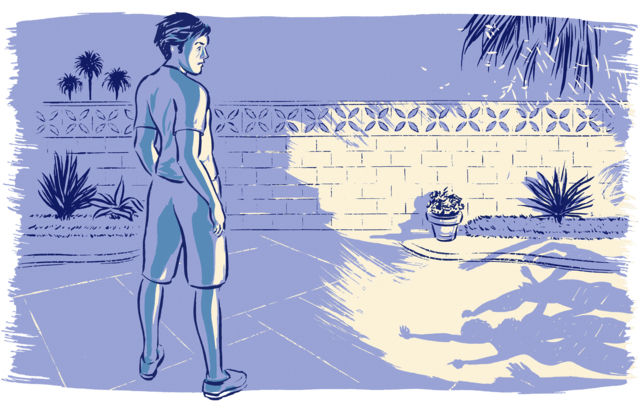
イラスト／グレッグ・スティーブンソン
10代のころのわたしはひどく反抗的で，親の育て方とは正反対の行動を取っていました。13歳で酒を飲み始め，高校の最終学年に上がるころには，毎週末飲むようになりました。
親との衝突を減らすために教会には時々出席しましたが，聖餐会の間はずっと寝ていて，終わると，日曜学校が始まる前に海に行っていました。親にしてみればわたしの行動が不満どころではなかったでしょう。両親がすばらしいのは，わたしの選択の自由を尊重しつつ，福音に従って生活するよう励まし続けてくれたことです。それでもわたしは教会に活発でいようとするつもりがなく，当然ながら，将来の視野に伝道は入っていませんでした。
高校卒業後はコミュニティーカレッジに通い，反抗的な態度を改めることはありませんでした。しかしある深夜のこと，ソファーに寝転がり，将来について思いを巡らせたことを覚えています。どんな女の子と結婚するのだろうか。もし主に背を向けたら，戻る道を見つけることはできるのだろうか。そうした決断は重要なことではありましたが，それでも変わろうという気にはなりませんでした。
それからしばらくして，友人が自宅の裏庭で開いたパーティーに顔を出しました。アルコールが出され，かがり火がたかれていました。仲間たちとふざけ合った後，少し離れた所へ行き，目を閉じました。
再び目を開けると，一瞬，頭がさえわたりました。友人たちがばかげた振る舞いをしているのを見ると，もはや自分がその仲間だとは思えませんでした。わたしはその場を離れ，飲酒もパーティーに行くのもやめる決意をしました。つまり付き合う友人を変えなければならず，それは簡単ではありませんでした。それでもそうしたのです。
この決断は人生を祝福してくれました。結局は伝道に出て，その後多くの召しを果たしてきました。最も重要なことは，すばらしい女性と神殿で結婚したことです。これが人生でこの上ない数々の祝福に導いてくれました。
最近，アルマとモーサヤの息子たちの改心と（モーサヤ27章参照），心に大きな変化を経験した経緯について読みました（アルマ5：12－14参照）。そうした変化は，一つには，アルマの父が忠実に祈ったことによってもたらされたものです。そしてわたしは両親のことを思い，30年以上の時を経て気づいたのです。わたしが目を覚ましたあのパーティーでの経験は，両親の祈りの直接的な結果だったということに。
今，悩んでいる一人の子供の親として，わたしはアルマの父，そしてわたしの両親と似たような立場にいます。それでも，聖文を自分に当てはめながら，いつの日か自分の子も心の変化を経験するだろうという信仰と希望を持っています。
宣教師になる夢がついにかないました
ジーン・ダニエル・ダロイ
（カナダ，オンタリオ州）
イラスト／ケイティ・ドックリル
長年わたしは専任宣教師になることを夢見ていました。しかし大学を卒業して家に戻ったとき，家族にはどうしてもわたしが必要だということが分かりました。父の健康が優れず，経済的な支えが必要だったのです。わたしは4人きょうだいの長女として，家にとどまり，手助けするべきだと感じました。天の御父の祝福により，まずまずの仕事が見つかりました。給料は多くありませんでしたが，何とかやっていくには十分でした。
専任宣教師として奉仕することについて聞かれると必ず，いつかはそうするつもりだと答えました。しかしそう言う度に，母はわたしに，うれしさと悲しさが混ざり合ったまなざしを向けるのです。伝道に行かせてほしいと頼んだなら，母はきっと「いいよ」と言って，家族の収入を失うことへの恐れを黙って胸にしまい込むだろうということが，わたしには分かっていました。
数年がたち，立派な神権者から神殿で結婚しようと言われました。わたしは「はい」と答え，その後，3人の子供に恵まれました。女の子2人に男の子1人です。特に大きな喜びの瞬間は，息子が伝道に出たときでした。慰めと安らぎが家中を満たしました。伝道に出たいという悲願が少しだけかなったように感じました。
長女が自分も伝道に出たいと言ったときには，たいそううれしかったものです。長女は毎週，伝道地から経験談を書き送ってくれました。長女の証に大いに刺激を受け，伝道の精神で満たされました。伝道する機会に恵まれるようにと，毎日祈りました。
ある日，ふと思いついて，ソーシャルメディアのプライベートメッセージを通じて，ある友人に宣教師に会ってみたくないかと尋ねてみました。彼女は「ぜひ！」と答えました。わたしはLDS.orgのオンラインで友人を紹介するフォームを使って申し込み，じきに友人は宣教師から福音を学び始めました。3か月で，友人は教会に入りました。数か月後には，子供さんたちが後に続きました。御霊の導きに従い，わたしはほかの友人たちにも，宣教師の話を聞いてみないかと勧めました。娘が帰還したとき，わたしは自分もまた18か月の宣教師の務めを果たしたように感じました。
天の御父は，わたしが心に抱く願いも，家族とわたし自身にとって何が最善かも御存じだったのです。宣教師として奉仕したいという，とても長い間心に抱き続けた願いを，御父が聞き入れてくださったことに感謝しています。
30年にわたる神殿への旅
フランシスコ・W・フィエロ
（ペルー，リマ）
イラスト／カール・ウィーンズ
わたしがバプテスマを受けてから数か月後，弟のオズワルドはほかの教会に加わり，足しげく通いました。しかし，わたしは真実だと確信している教えをオズワルドに知ってもらいたいと思っていました。特に預言者の言葉に触れてほしかったのです。
毎月，機関誌『リアホナ』が届くたびに，オズワルドに記事を紹介しました。この機関誌に載るテーマの中に，弟が彼の教会で集会に備えるうえで役立つものがあるのではないかと提案しました。弟が提案を受け入れてくれたときは，うれしかったです。しかし，長い年月が過ぎて，弟がイエス・キリストの回復された福音を受け入れそうもないと分かり，悲しくなりました。
ある朝，オズワルドはわたしたち家族に，エクアドルの家を出てスイスに行こうと考えていると言いました。出発する日，弟はわたしの神権の祝福を受け入れました。とても感動的な瞬間でした。なぜなら，この旅のおかげでオズワルドは救い主と救い主の教会に近づくだろう，と御霊がわたしにささやいたからです。
オズワルドはスイスで宣教師と出会い，ついには家に招くようになりました。そのうち宣教師と仲良くなりましたが，もしバプテスマの話を持ち出したら，もう宣教師を受け入れるつもりはないと，わたしに言いました。バプテスマを受けるというメールを弟から受け取ったときのわたしの驚きと喜びを想像してください。わたしは1981年に教会に加わりました。オズワルドは20年後の2001年5月にバプテスマを受けました。その後，2002年7月にエンダウメントを受け，2003年2月に伴侶と結び固められました。
オズワルドはエクアドルに帰って来たとき，聖餐会で証を述べました。涙ながらにこう言ったのです。「兄が預言者の言葉を分かち合ってくれました。その言葉は，以前通っていた教会の集会に備えるうえで霊感を与えてくれましたし，同じように多くの人が教化されました。預言者の言葉がわたしの人生を変えました。預言者の言葉を通して，イエス・キリストの福音が力と権能とともに完全な形で地上に回復されたことを知るようになりました。」
2011年2月に，オズワルドとわたしは，エクアドル・グアヤキル神殿で両親と結び固められました。預言者の言葉はわたしたち家族を永遠に祝福してくれました。
殉教とわたしの証
スンジュ・キム・ミュア
（アメリカ合衆国，メリーランド州）
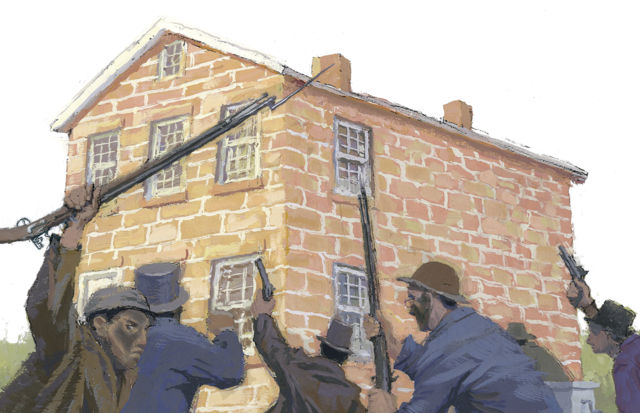
イラスト／アレン・ガーンズ
宣教師がジョセフ・スミスとモルモン書について教え始めたとき，わたしは容易には信じられませんでした。最初に頭に浮かんだことは，ジョセフ・スミスは，ほかの数多くのいわゆる「預言者」と同様に，富や名声，栄誉を求めて，偽物の書物を世に出したのかもしれないということでした。
モルモン書を読んでみようなどという気は毛頭ありませんでした。ところが，時がたつにつれて，宣教師の友情や福音に対する熱意に心を動かされ，彼らのメッセージを聞いてみようかという好奇心が頭をもたげたのです。
宣教師が勧めるモルモン書の聖句を読むうちに，モルモン書が真実かどうか，誠心誠意でキリストを信じながら神に問えというモロナイの勧めに行き当たりました（モロナイ10：4－5参照）。わたしは考えました。「モルモン書が真実かどうか誠心誠意で神に問えだなんて，この書物が偽物だと分かっていながらあえて勧める人間がいるだろうか。」
そんなある日，宣教師から，ジョセフ・スミスと兄のハイラムは，自分たちの証のゆえに殉教したのだという説明を受けました。不意にある思いが頭をよぎりました。二人は偽物だと分かっていることのために命を投げ出すようなことは決してしなかっただろうという思いです。その瞬間，温かい気持ちが，まるで燃える炎のように，心に広がっていきました。それは，ジョセフ・スミスは真の預言者であったとわたしの心に確信をもたらす聖なる御霊の証でした。この証を得てわたしはバプテスマを受け，会員として確認されました。
25年前のこの経験を思い出しながら，十二使徒定員会のジェフリー・R・ホランド長老の話を読んでいました。その話の中でホランド長老は，殉教という生死を分けるその瞬間に，ジョセフとハイラムは，偽物だと分かっている書物に自分の命と名誉と永遠の救いをかけて，神を冒瀆し続けるようなことをするだろうか，と尋ねています。
「そのようなことをするはずがありません。」ホランド長老はこう言っています。「二人は，モルモン書が神聖な起源を持つ永遠に真実な書物であることを否定するくらいなら，むしろ進んで死を選ぶ人たちでした。」
ホランド長老の言葉は，わたしにとって深くうなずけるものでした。そして，預言者ジョセフ・スミスとモルモン書の力について，わたしの証がいっそう強められたのです。
わたしは預言者ジョセフ・スミスに感謝しています。ジョセフ・スミスはモルモン書を世に出し，イエス・キリストの証人となるために自ら進んで命をささげました。モルモン書を読むことで，わたしは神が存在し，わたしを愛してくださっていることを知ったのです。
わたしたちが信じていること
わたしたちはキリストによって完全になることを信じています
Abide with Me（「主よ，われと共に」）デル・パーソン画
山上の垂訓でイエスは，完全な者となりなさい，との難しい戒めをお与えになりました（マタイ5：48参照）。しかし，人は間違いを犯すことを避けられません。この戒めを守るうえで神はどのように期待しておられるでしょうか。神のわたしたちへの期待について正しく理解することで，「キリストによって完全」になる，という預言者モロナイの言葉の意味を理解できるようになるでしょう（モロナイ10：32－33参照）。
完全になるとはどういう意味でしょうか
「完全を指すギリシャ語には，『完成する，成し遂げる，十分に発達する』という意味があります（欽定訳聖書〔英語〕マタイ5：48脚注b）。救い主はわたしたちに，完成し，成し遂げ，十分に進歩すること，すなわち，救い主と天の御父が完全な模範を示しておられる徳と特質において完全であることを求めておられるのです。」
「救い主がわたしたちのために心に描いておられる完成とは，過ちのない行為以上のものです。それは永遠の視野に立った期待であり，主が御父にささげられた次の偉大な執り成しの祈りにも表れています。『わたしたちが完全になれますように，そして永遠にともに住まうことができますように』。」
「この件に関するイエスの説教は，わたしたちの至らなさを言葉で打ちのめすためではないと思います。そうではなく，主とともに到達することのできる人の状態と，永遠の父なる神のおられる状態に対する賛辞として行われたのではないかと思います。」
神が期待しておられること
- 「神の御心に添わないものをすべて拒み，勢力と思いと力を尽くして神を愛する。」（モロナイ10：32）
- イエス・キリストを信じる信仰を持ち，すべきでないことをしたら悔い改める。
- 神と交わした聖約つまり約束を守る。
- 生涯を通じ最善を尽くして戒めを守る。
- 「あなたがたが完全になるまで忍耐し続け〔る。〕」（教義と聖約67：13）
神が期待しておられないこと
- 今，完全になる。決して間違いを犯さない。
- 完璧主義に苦しむ。
- いつも忙しい。娯楽もなく働いてばかりいる。
- 進歩がないと自分を責める。
- 善いことを山ほどして，天への道を「勝ち取ろう」とする。
「惜しみなく与えられる救い主の贖いの愛を理解すれば，わたしたちは，完全とは何かということについて自らに課した，正しくない，非現実的な期待を抱かなくなります。」
十二使徒定員会ゲレット・W・ゴング長老「キリストにあって完全になる」『リアホナ』2014年7月号，42
わたしたちの家庭，わたしたちの家族
ヤモリとイナゴ，そして「子供との時間」
ダイアン・トーマス
筆者はアメリカ合衆国メイン州在住です。
爬虫類が，息子とわたしとの関係に永続する影響を及ぼすとは思ってもみませんでした。
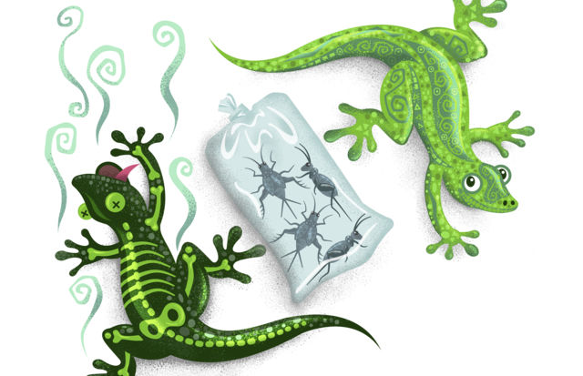
イラスト／デビッド・グリーン
息子のダリンは子供のときから爬虫類が大好きです。一方，わたしは決して好きにはなれません。爬虫類を飼うことを許しはしましたが，息子が学校に行っている間に万一ケージから出てしまったときのために，掃除機のホースに入るサイズのものを選ぶという条件を付けました。カエルからイグアナまで，幾つか選択肢を検討したうえで，ファズとダイアンと名付けた，滑らかな肌触りのヒョウモントカゲモドキ〔訳注：ヤモリの一種〕に落ち着きました。
ダリンの新しい仲間がわたしたち家族のもとにやって来たのは，息子が7歳のときでした。ヤモリの飼育について予想もしていなかったことの一つは，週に1度，餌としてイナゴ，それも生きたイナゴを与えなければならないということでした。何年も，ダリンとわたしはイナゴを買いに行ったものです。都合の良いときはめったになく，夜遅くペットショップが閉まる直前に滑り込むことがよくありました。
ダイアンは3年しか生きられませんでしたが，ファズは何年も健康で幸せに生き続けました。ダリンが高校卒業の年を終えるころ，演説の授業で実演する割り当てを受けました。アイデアを求められた夫とわたしは，ヒョウモントカゲモドキについて話すよう提案しました。ダリンのよく知っているテーマだし，ファズを連れて行ってみんなに見せることもできるからです。ダリンからファズがもう死んでしまったと知らされたのはそのときでした。
「何ですって？いつ死んだの？」わたしはあっけに取られて尋ねました。
1週間前に死んだ，とダリンは言いました。
「まだぼくの部屋にいるけど，心配は要らないよ。臭くならないから。袋を2重にして入れてあるんだ。」
わたしたちの驚く様子を見て，ダリンはこう説明しました。「実験してるんだ。ファズの腐敗の過程を観察したいんだよ。」
結局，ダリンの実験は腐敗の観察だけにとどまりませんでした。腐敗を遅らせるためにファズを2週間冷凍庫に入れ，それから冷凍庫から出して解凍し，さらに腐敗を進めるということを繰り返したのです。
それから1年がたち，ダリンが伝道中のことです。冷凍庫の片付けをしていたわたしが，奥にまだ2重の袋に入ったままのファズを見つけたのです。ダリンに送る荷物を準備していたところだったので，息子の小さな被験者を届けたら面白いかもしれないと思いました。わたしはファズを箱に入れて白と黒の水玉模様の紙で包み，ダリンあての荷物の中にうまく忍ばせ，「サプライズが入っています」というメモを付けておきました。そして，息子の反応を今か今かと待ちました。
彼はこう書いてきました。「包みを送ってもらってからずっとあのヤモリのことを考えた。というか，ヤモリ自体のことより，毎週イナゴを買いに行ったときやほかの用事で出かけたときに，車でお母さんの考えていることやいろいろな話や証を聞いたときのことをね。一緒に出かけなきゃいけないことが，お母さんと話す良い口実になっていたんだ（ぼくはそんなに話さなかったけど，ちゃんと聞いていたんだよ）。」
イナゴを買いに行ったことが。意外でした。親であるわたしたちは，影響を与えるタイミングをいつも計画できるわけではありません。多くの場合，それは偶然起こります。夜子供を寝かしつけているとき，一緒にスキーリフトに乗っているとき，あるいは用事で出かける車の中かもしれません。わたしたちは子供と過ごす時間を作る必要があります。
救い主は子供のために時間を取ることについて最高の模範を示してくださいました。一日かけてニーファイ人を教えた後，キリストは子供たちを連れて来るよう命じられました。主は幼い子供たちの真ん中でひざまずいて祈り，祈り終えると涙を流されました。そしてそれから，「幼い子供たちを一人一人抱いて祝福し，彼らのために御父に祈られ」ました（3ニーファイ17：21）。
子供たちはイエスに愛されていることを知りました。主は進んで彼らのために時間をお取りになりました。耳を傾け，彼らのために祈り，祝福なさいました。これを見聞きした人たちは大いなる力に満たされた，と次のように記されています。「わたしたちはイエスが御父に話されるのを見聞きしたが，それは目がまだ見たこともなく，耳がまだ聞いたこともないほど，大いなる驚くべきことであった。」（3ニーファイ17：16）
イエス・キリストがこの子供たちに及ぼされた影響は何世代も続きました。子供に関心を注ぎ，時間を割くとき，それがただイナゴを買いに行くだけであっても，わたしたちの影響が同じように何世代も続きますように。
10代の若者や子供を教える
教会に出席しない親がいるときには
カーメル・ニューウェル
筆者はアメリカ合衆国ユタ州在住です。
ラッセル・M・ネルソン大管長は，愛ある家庭で尊敬する両親のもとに成長しました。子供のころ，両親は一緒に教会に行っていなかったので，自分の家族と神殿で結び固められたいと切望していました。でも，どんな子であっても，聖約の道を独りで歩む必要はありません。家庭で福音のサポートを受けられない子供がいたとしても，ほかの家族やワードの会員の愛と関心によって，足りない部分を補うことができます。結局のところ，確固とした福音の教えに接し，家庭や教会で良い経験を積むことで，どんな子であっても天の御父の愛を感じることができるのです。
伴侶が教会に来ていない方への提案
- 福音に従って生活する祝福を分かち合いましょう。福音に従って生活すれば平安がもたらされ，重荷は軽くなるのだということを子供が分かるように助けてあげてください。出席しないことを選ぶ親について悪く言うことなく，自分が教会に参加するという選択をするのはなぜか，その理由を説明します。バプテスマの聖約を守ることでどれほど慰めや導きを得られるのか，あなたの思いを伝えてください。
- 前向きな態度を養いましょう。子供が自分の家族の良い点に目を向けられるよう，助けてあげてください。また，教会の教師や指導者，ワードの会員の良い点に目を向けられるよう，助けてあげてください。教会で子供が学んできたことについて，話し合いましょう。他人の弱点や何げない言葉をあれこれ気に病まないでください。むしろ，前向きな言葉遣いをし，人から学ぼうという意欲を前面に出してください。
- マイナスの感情に対処しましょう。恐れ，孤独，失望，怒りといったマイナスの感情を認識できるように子供を助けてください。そのうえで，絵を描いたり，遊んだり，口に出したりすることで，そのマイナスの感情を適切に処理できるよう，助けてあげてください。必要に応じて，専門家の助けを求めることもできます。傷ついた心を癒すことで，だれでも霊的な感覚にもっと敏感になり，教会でもっと良い経験を重ねることができるようになります。
- 必要に応じて助けを求めましょう。助けが必要な場合，だれかが手を差し伸べてくれるまで待たないでください。教会の指導者やワードの会員は，あなたの必要に気づかないかもしれませんし，求められないのに助けることをためらうかもしれません。もし子供に祝福が必要なら，よく祈ってだれに助けてもらえるか考え，頼んでください。また，自分はだれを助けられるか，よく考えてください。
すべての成人への提案
- 両親ともあるいはどちらかが教会に出席しない子供がいたら，心を配り，愛しましょう。名前を覚え，温かくまた親切にあいさつしてください。その子の状況について裁くことは控え，親が来ないことについて質問するのはやめましょう。周りの教会員から真心からの愛を感じたら，子供たちはもっと容易に肩の力を抜き，学び，御霊を感じやすくなります。
- 特有の必要性に敏感になりましょう。両親や片方の親が教会に出席しない子供の場合，特定の教えや活動が影響を及ぼす場合があることに，心を配ってください。神権の祝福に関するレッスンでは，だれでもこの祝福にあずかれるということを教えてください。活動に親が入る場合，全員の親を対象にします。父の日や母の日といった特別の日には，敏感に感じる子供がいるでしょうから，十分に気を配ってください。
- 家族を愛し，強めることができるよう助けましょう。家族が神によって定められたものであることを子供に教えてください。自分の家族の良い点に目を向けられるよう，励ましてください。家族歴史の活動は，自分が生まれる前から自分の家族は始まっていたのだということを理解するのに役立ちます。そして，家族歴史の活動をしていると，「家族内のさらなる親密さと喜び」という祝福にあずかることができるのです。
- 真の教義を教えましょう。選択の自由は救いの計画の中で中心となる教義です。親の選択や罪に対して子供に責任はありません（モーセ6：54参照）。親の問題は子供のせいではありませんし，親の問題の軌道修正も子供の責任ではありません。これを知っておけば，子供は自分で変えられないことをあまり心配しなくなるでしょうし，また家族で毎日数多くの祝福を受けていることに気づくでしょう。
大管長会第二顧問のヘンリー・B・アイリング管長はこう教えています。「天の御父は，御自分の家族を集め，祝福することを切に願っておられます。その計画ではどの子供にも，神の招きを受け入れるか，拒むかの機会が与えられています。そして，この計画の中心は家族なのです。」
子供のために
『フレンド』：
- ネルソン大管長の子供のころの経験：「親に感謝する」（2019年6月号，F2）
- 「新しい章」（2019年6月号，F4）
- 「スティーブンの最初の未来の父の日」『リアホナ』2015年6月号，72－73
青少年のために
『リアホナ』：
- 「人生はマラソンである」（2019年4月号，54）
デジタル版のみ
毎日新しいことを学んでいますか
この記事は，最初自立支援サービスのブログに掲載されたものです。
新しいことを学んで脳を活性化することは，精神衛生上良いことです。
決まり切った行動から少し外れて新しいことをするのは，長い間使っていなかった筋肉を使うようなものです。毎日何か新しいことを学ぶことを習慣にすると，最初はつらいかもしれませが，そのうちにそれがうまくできるようになり，あなたの脳は，毎日新しいことを学ぶという課題に順応できるようになっていきます。何かができるようになる度に達成感がありますし，さらに重要なのは，学ぶのが喜びになるということです。
何を学ぶかよりも，学ぶ過程の方が大切です。しかも，ノートパソコンや携帯電話があり，その情報がすべて直ちに手に入るのですから，学習はかつてないほど容易にできます。「新たに学ぶこと」を毎日送ってくれるアプリまであるのです。
それに，込み入ったグーグル検索をしたり，ウィキペディアの記事を全部読んだりする必要もありません。あなたの脳を毎日新しい方向に働かせることは，本を読んだり短い詩を暗記したり，新しいレシピを覚えたりするといった簡単な方法で行うことができるのです。または，長期にわたって何かをしてもよいでしょう。楽器を演奏できるようにするとか，新しいスポーツやトレーニング方法をマスターするとか，新しい土地を旅行して地元の人と話すなどといったことです。
では，あえて新しいことを学ぶようにすることのメリットを挙げましょう。
- 退屈しない。
- 興味深い人物になり，会話が弾むようになる。
- 新しい友達ができる（上記2のおかげで）。
- 時間管理のテクニックが身に着く。
- 自分の子供にとって良い模範になる。新しいことを学んだり試みたりすることがいかに楽しいかを子供たちは知る。
わたしたちはだれでも，個人の成長のためにこの地上にいます。学び方を身に着ければ，成長のスピードが速くなります。精神的な成熟度が増し，課題をやり遂げる力がつき，人に対する忍耐力も身に着きます。
毎日新しいことを学ぶことの利点を挙げればきりがありません。一つの大きな理由はアレックス・ブラックウェルの言葉の中にあります。毎日何か新しいことを学んでいると「周りにあるものの価値が見えてくる」という言葉です。「ほんの少し見方を変えるだけで周囲のものに深く感謝できるようになり，大きな価値を見いだすことができるようになることがあるのです。」（"The Benefits of Trying New Things," Everyday Inspiration, Beliefnet, Mar. 2014）
大変なのは，実際に始めることです。そこで，始めるためのコツを教えましょう。4歳の子供に，何が見えるか尋ねるのです。冗談ではありません。とにかく，尋ねてください。子供はあなたの顔を見るかもしれません。辺りを見回すかもしれません。空を見上げたり地面を見たりするかもしれません。好奇心旺盛な子供が見えたと言うことを，何でもグーグルで調べてください。その一つのことについて学べることを，片端から学んでいくのです。例えば，木の葉について子供が言ったとしたら，その木は何という種類の木でどれくらい大きくなるのか，原産地はどこなのかを調べてください。調べまくると楽しくなり，それはあなたの脳のためになります。
では，それと同じ原則を，あなたの霊的な生活に当てはめてみましょう。聖文を読んだら，一息おいて，「これは実際にどんな意味なのだろうか」と考えるのです。相互参照聖句を活用してください。意味を深く考えてください。理解できるよう祈ってください。一息入れて自分の心を鎮めると，通常はささやかな方法で，少しずつ御霊が教えてくれます。
頭脳も霊も日々成長し，自分がさらに幸せで豊かな人間になっていくのが分かるようになるでしょう。
さらに知るために
福音ライブラリーアプリのヤングアダルトのコーナーにある「YAウィークリー」は必見です。ヤングアダルト向けの感動的なコンテンツが毎週アップされています。
皆さんの経験談やアイデア，ご意見ご感想を liahona.lds.orgまでお寄せください。皆さんからのお便りをお待ちしています！
ヤングアダルト
完璧な計画
計画どおりにいかなかった経験を皆さんが最後にしたのは，いつですか。先週ですか。わたしにはそんな経験があります。どんなに完璧な計画を立てても，人生に予期せぬ紆余曲折があることは否めない事実のようです。わたしは最初の子供が生まれてから次の子供が生まれるまでに4回流産する計画など立てたわけではありません。でも，そうなったのです。よく祈って計画を立てたのに予期せぬことが起こって驚くことがありますし，計画が総倒れになることもあります。どうしたらよいのでしょうか。計画どおりに子供をもうけることができなくなった場合のこの質問の答えを，ヤングアダルトは様々な状況の中で見いだしています。今月号では，それを分かち合います。
わたしと主人の場合，流産のために計画が頓挫し，胸が張り裂けるような思いをしました（44ページ参照）。カテリーネと夫は，世の中の意見を吟味して主の御心を見いだすのは非常に難しいということを知りました（48ページ参照）。
そのほかデジタル版のみの記事では，母親になることに対する恐れと戸惑いについてクリスティーナが語り，軍の駐屯地に派遣されたことによって自分と妻の子供をもうける計画が暗礁に乗り上げそうになった経緯をブライアンが詳細につづります。ヤングシングルアダルトのケイティは，親の務めが永遠に続くことについて意見を述べています。
子供が生まれて家庭に祝福が来るのを待っているのであれ，当初の計画よりも子供をたくさん授かっているのであれ，ただ結婚する時が来るのを持っているのであれ，確かなことが一つあります。それは，天の御父は完全な計画をお持ちであり，わたしたちが神の御心に添った行いをしようと努めるときに，常に個人的に一対一で導き，支えてくださっているということです。
結果がどうあれ，単にこの世に子供を迎え入れたいと強く願うだけでも，視野が開けて天の御父の偉大な幸福の計画がさらに深く分かるようになるという祝福にあずかります。子育てのどんな段階にいる人も，今月号の話を読むと，聖霊の導きを得て，子育ての助けになるアイデアや答えが見つかるだろうと，わたしは心から思っています。
楽しんで読んでください。
マリアンヌ・フォン・ブラクト
最高のアドバイス......
ヤングアダルトが，子供をもうけることに関して自分が受けた，実践できる素晴らしいアドバイスをシェアします。
「結婚してまだ間もないとき，すばらしい教師が，それはあなたと伴侶，そして主の間で決めることだと言いました。『夫と妻の間で決めることだと言って，主を考えない人がよくいるから』と警告したのです。決める際に常に主を念頭に置いたことで，言い表せないほどの祝福を受けました。」
---ボニー・コーニック（アメリカ合衆国，アイダホ州）
「子供を産む『完璧なタイミング』が来るのを待っていたら，永遠に待つことになってしまいますよ。」
---アニー・ホール（オーストラリア，クイーンズランド州）
「ほかの人の言うことは気にしないでください。これは，あなたと伴侶と，天の御父との間の事柄なのです。」
---クラニ・ウォルターズ（ニュージーランド，オークランド）
逆境を克服することにについて今までに受けた最高のアドバイスは何でしたか。質問の答えを2019年6月30日までにliahona.lds.orgに送ってください。
あなたの経験談を聞かせてください
分かち合いたいすばらしい話がありますか。また，どのようなテーマに関する記事を読みたいですか。ぜひお聞かせください。あなたの記事やご意見，ご感想を，liahona.lds.orgまでお寄せください。
ヤングアダルト
人生の停止信号で祝福を待つ
マリアンヌ・フォン・ブラクト
筆者はアメリカ合衆国テキサス州在住です。
わたしは繰り返し経験する流産を，延々と続く停止信号のように感じていましたが，主に目を向けたとき，流産の度に平安，展望，成長が与えられていたことが分かりました。
赤信号を不安な気持ちで見詰めていたとき，わたしの指は車のハンドルを固く握り締めていました。ようやく信号が青に変わり，スピードを上げて進んだものの，またすぐに停止信号で待つ，ということが果てしなく続くように感じました。姉妹宣教師とのレッスンがあと5分で始まるのに，着くまでまだ10分はかかりそうです。もっと賢い母だったら，出掛けにもうすぐ3歳になる娘が15分もかんしゃくを起こすことを予測できたはずなのに，わたしにはできませんでした。確かに，わたしが遅れてもこの世の終わりというわけではありません。でも，わたしは良いことをしようとしていたのですから，少なくとも信号の幾つかは，わたしに都合よく働いてくれてもよいのではないでしょうか。また別の停止信号でやきもきしながら待っていると，いらだちが怒りに変わるのを感じました。「わたしは良いことをしようとしているのよ。最善を尽くしているの！わたしが必要な助けはどこにあるの？」
20か月前，わたしは似たような状況で同じような質問をしていました。ただ，そのときのわたしは停止信号の前ではなく，平安と静けさに満ちた場所にいました。
ニューヨーク州パルマイラの聖なる森では，わたしを取り囲む茶色の枝から木の葉がわずかに芽を出していました。地面に点在する緑のかん木が空気中に命を吹き込んでいるように思えました。わたしの耳に届くのは，優しいそよ風の音と，わたしたちの押すベビーカーと自分の足音だけで，車も道路も声高な話し声も聞こえません。しかし，そのような静けさにもかかわらず，わたしの心は疑問と不安に揺れていました。夫のランスとわたしは，緊急の超音波検査と血液検査の結果を知らせる医師からの連絡を72時間も忍耐強く待っていたのです。わたしは必死に答えと安らぎを求めていました。
慰めを受ける
「主は彼らに御霊を下し，『慰めを得なさい』と言われた。そこで彼らは慰めを得た。」（アルマ17：10）
わたしは，ニューヨーク州パルマイラ神殿の外で冬枯れの花壇の花をじっと見詰めていました。わたしの心はすっかり疑問に捕らわれ，こう考えていました。「もし流産するとしたら，それはなぜなのだろう。その後，どうしたらよいのだろう。」主はわたしの心に春のそよ風のように優しく語りかけ，切望してきた慰めを与えてくださいました。もはや医師からの知らせは必要ありませんでした。胎児を失うことが分かったからです。でも，この小さな魂が天の御父の完全な愛の手の中にあることを，突然理解したのです。その瞬間，わたしの心を支配していた絶望は，心強い平安に変わり，その後の数週間から数か月にわたってわたしを支えてくれました。
青信号を待つ
「わたしが平安を必要としていたときに，様々な方法で主はわたしに慰め主を送ってくださいました。そのことにこれまでずっと感謝してきました。しかし，天の御父は，わたしたちの慰めだけでなく，わたしたちの成長についても関心を持っておられます。」---ヘンリー・B・アイリング管長
パルマイラを訪れてから数日後，忘れらないほど大変な流産を経験しました。平安な気持ちに支えられたのですが，胎児を失うことで肉体的にも情緒的にも弱くなり，その後起こる事態に直面する備えができていませんでした。当初待っていた病理検査の結果は，それがまれな部分的奇胎妊娠であったことを示していました。その後，それが原因で発生する可能性のあるがんの兆候がないことを確認するために，週ごとに，1週おきに，そして最後には月に1度，血液検査を受け，その結果を待つ日々が続きました。何か月も待ったにもかかわらず，ランスとわたしは，その時期を通してわたしたちを慰め，励ましてくださる主の御手を容易に目にすることができました。部分的奇胎妊娠による持続的な弊害は認められず，6か月後には医師から再度妊娠を試みてもよいと言われました。わたしは再度人生で進歩する道に戻りました。信号はようやく赤から青に変わったのです。
しかし，妊娠3か月足らずで血液検査を数回受けた後に，また流産を経験しました。そのときはクリスマスの1週間前でした。それからまた3か月がたち，妊娠テストが陽性だったので，わたしの希望は高まりましたが，わずか1週間後に流産してしまいました。また停止信号がともったのです。
試練の中で信仰を保つ
「どんなに強い信仰があっても，多くの山は動かないでしょう。......あらゆる反対勢力が消滅したり，弊害がすべて取り去られたりするとしたら，御父の計画の第一の目的は果たされません。」---デビッド・A・ベドナー長老
わたしは再び妊娠しました。そして出産予定日は，次のクリスマスのすぐ後あたりでした。今度こそ大丈夫だと感じていました。初期の超音波検査では心臓の鼓動が聞こえましたし，家族がわたしたちのために祈っていることを知っていたからです。ある日，神殿のエンダウメントセッションで座っていたとき，次のようにはっきりと思いました。「この妊娠が流産に終わるようなことがあったら，わたしの信仰はそれに耐えられるだろうか。ええ，確かに耐えられるでしょう。しかし，もちろん，もう二度と流産はしないはずです。たとえ何が起ころうと，今回は主の御心を受け入れる備えができているのですから。」
わたしの肯定的な態度にもかかわらず，数週間後に危険な兆候が見えたので，超音波検査を受けに行きました。それは，わたしが頻繁に経験してきたつらいプロセスの始まりでした。わたしの信仰は，自分が期待していたほど強くはありませんでした。以前の流産の間ずっとわたしを支えてきた答えだけでは，もはや不十分なように思えました。憂鬱の波が押し寄せてきました。胸が張り裂け，むなしい気持ちになり，多少裏切られた気持ちがしました。主からの恵みを待っていたのは夫とわたしだけではありませんでした。娘も，どれほど赤ん坊のきょうだいを望んでいるか，何度も口にしていたのです。わたしたちの心は娘のためにも痛みました。熱心に祈り，傷ついた思いを主に向けたとき，天の御父がわたしの苦痛と状況を非常によく知っておられて，わたしを愛してくださっているという，はっきりとした証を再び受けました。わたしの状況は変わりませんでしたが，この心地よくシンプルな経験により，日々生活をしていく中で重荷が奇跡的に軽くなり，うまく対処する力が与えられ，幸福さえ感じました。この先何があったとしても，わたしは大丈夫だと感じたのです。
数か月後に，遺伝子検査の結果が明確な答えのないまま戻ってきたとき，わたしたちは人生におけるこれらの挫折の目的について再び混乱を感じました。わたし自身の望みを脇に置き，自分の思いを主の御心に合わせるように最善を尽くしましたが，困難なときにわたしの心はこう叫びました。「この経験から何を学ぶべきなのでしょうか。わたしは良いことをしようとしているのです。わたしが必要としている助けはどこにあるのですか？」
自分の対応を変える
「困難は常に存在します。だれもが問題に直面します。変えられるのは，困難にどのように対応するかです。」---スタンレー・G・エリス長老
4回目の流産から8か月，姉妹宣教師との待ち合わせのためストレスを感じながら車を運転した日からわずか数週間後，家に向かう道の停止信号で平安な気持ちで待っていたときに答えは来ました。隣りに止まっていた何台かの車がわたしより先に道路を走って行くのを見たとき，わたしは自分の人生を永遠の観点から見ることができました。わたしの旅路において大切なのはただ一つ，天の家に帰るための道にとどまることであると突然理解したのです。どれほど多くの「停止信号」で待ったとしても，わたしの行く末に何の影響もありません。わたしがどう対応するかが大切なのです。
わたしは，自分の人生におけるすべての停止信号を，それが比喩的なものであっても，文字どおりのものであっても，大事にし始めました。時間を無駄にする代わりに，一つ一つが忍耐力を培う機会となり，待つことによってのみ得られる観点を身につける機会となりました。あらゆる赤信号が別の方向を指示する青信号と対になっているように，わたしの人生におけるあらゆる停止信号も成長のための道を開いてくれることが分かりました。ただ，必ずしもわたしがそのとき計画していた成長の仕方ではないかもしれないのです。落胆してくよくよ考える代わりに，予期せぬ出来事の一つ一つを進歩の機会として喜び始めました。
救い主に焦点を当てる
「熟考すべき重要な問いかけは，『わたしたちは，信仰をどこに置くのだろうか』ということです。わたしたちの信仰は，単に痛みや苦しみから解放されたいという望みに向けられたものでしょうか。それとも，父なる神と神の聖なる計画，イエス・キリストとその贖罪をしっかりと中心に据えているでしょうか。」---ドナルド・L・ホールストロム長老
最初の流産から2年の歳月が流れ，わたしは健康でかわいい男の子を出産しました。家族にとって喜びあふれるその日が来るまでの時間の中で，わたしはイエス・キリストがわたしの人生の苦しみのすべてを取り除くために苦しまれたのではないことを認識するようになりました。むしろ，主は，直面する困難な問題を通してわたしを強め，成長できるように苦しんでくださったのです。小さな命を失ったときの胸が張り裂けそうな悲しみや，何か月も待った日々のことを思い出すと今でも心が痛みますが，それは皆，わたしの人生の宝となっています。そのような神聖な時間に，救い主が個人的にわたしの苦しみをほんとうによく知っておられることを理解するようになったからです。主は，わたしの個人的な悲しみを知っている唯一の御方にしかできない方法で，わたしを慰めてくださいました。人生には，試練がわたしたちの進歩の計画を妨害するように思えることが多い一方で，わたしたちが主の愛を知ってその愛にとどまるとき，主はその試練によって，わたしたちがより高い終着点に到達できるようにしてくださいます。
マリアンヌ・フォン・ブラクトは，家族と過ごす時間と音楽，そして太陽の光が大好きです。アメリカ合衆国ミシガン州の出身で，日の照ることが少ない土地で育ったため，どんなに雲が厚く立ち込めていてもキリストの光に心を明るく照らしてもらえることを知っています。
ヤングアダルト
子供がいることによる祝福
カテリーネ・ラミレス・デ・ピネーダ
筆者はニカラグア，マナグア在住です。
「また子供を産むの？」と，よく人から聞かれました。しかし，わたしたちは子供たちを通して，天の御父の愛をもっとよく理解し，また自分の神聖な潜在能力を伸ばすことができるのです。
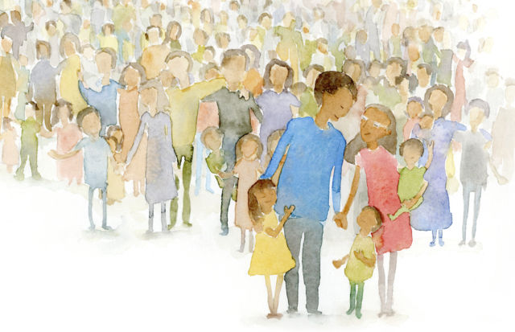
イラスト／タウシャ・コーツ
「これで最後？」わたしがすでに5歳未満の子供が二人いながら3番目の子供を妊娠したとき，周囲から一言，「これで最後？」「早すぎるとは思わないの？」「子供が3人いて，何をするつもり？」そのようなことを言われることがしばしばありました。わたしの国の人は，経済的な問題から普通，子供は一人か二人しかいないので，それは理解できましたが，夫とわたしがデートをしていたときに，欲しい子供の人数と子供を持つ時期について話し合ったことを，彼らは知りませんでした。家族計画は大切で重大な決断事項ですから，常に神の導きを求めながら，わたしたち二人の間で決めなければなりません。わたしたちは周囲の人の声よりも御霊に聞き従い，子供をもうけることによって祝福を受けました。
主はアブラハムと聖約を交わされたときに，彼に数多くの子孫を約束されました（創世17：5－6；22：17参照）。その聖文の言葉から，天の御父にとって，子供がいることはわたしたちが得られる最も大いなる祝福の一つであるということが分かります。わたしたちは子孫を通して，天の御父の愛をもっとよく理解し，また自分の神聖かつ永遠の可能性を伸ばすことができるのです。子供をもうけるときに，あなたは，前世にいるその霊たちが地球に来て体を得られるようにするだけではありません。彼らに福音を教える特権もあるのです。この世の事柄の中で，永遠の命を受ける備えとして子供をもうけることに勝るものはほとんどないと，わたしは信じています。家庭は，主の特質を応用することを学ぶ最良の場です。わたしは現在母親ですから，天の御父に近くあることがどれほど重要かを毎日実感しています。わたしはいつも祈って，導きと強さ，忍耐力を求めており，また子供たちがいることによって与えられる多くの祝福を，御父に感謝しています。
子育ては，苦労はあるにしても喜びの多い，人生を変える経験です。長女が初等協会の歌を歌うのを耳にしたり，2歳の息子が家族の祈りの間目を閉じていようと努力している姿を目にしたりする度に，あるいは眠っている幼い息子を腕に抱くときに，わたしは言葉で言い尽くせない喜びが心に満ちるのを感じます。人生で直面する問題がどれほどたくさんあろうとも，子供たちは，わたしたちが最後まで堪え忍び続けるために必要なエネルギーの源なのです。わたしは子供たちの母親となる機会を与えてくださったことを，天の御父に心から感謝しています。
天の御父がわたしたちを愛してくださっていることを，わたしは知っています。わたしは試練のときも，永続する本当の幸せがちりばめられた一瞬一瞬にも御父の愛を感じてきました。御父は天の家に帰る道を示すために，御子イエス・キリストを送ってくださいました。わたしは自分の家族を愛しています。そして，家族が永遠に一緒にいられることを知っています。
カテリーネ・ラミレス・デ・ピネーダは，ニカラグアのマナグア出身で，18歳のときに教会に入りました。英語を外国語として教える方法を学び，小学校の教師として働いています。彼女と夫はグアテマラ・グアテマラシティー神殿で結び固めを受けて，かわいい子供が3人います。
デジタル版のみ：ヤングアダルト
親という永遠の本質
ケイティ・スー・エンブレイ
筆者はアメリカ合衆国ユタ州在住です。
伝統的な世間の標準からすると，わたしは母親ではありません。しかし，神はわたしの永遠の本質を御存じであり，わたしもそれを知っています。
時々，自分は果たしてこの世で母親になるのか，神の約束された祝福を受けるには来世まで待たなければならないのかと考えます。独身であることについて決して愚痴をこぼさないと言えたらいいのに，と思います。でも，正直に言うと，つらくてたまらない時もあります。孤独を感じて落ち込みます。
でも，これも正直に言いますが，とても幸せな時もあるのです。自分は正しい方向に向かっているという絶対的な安心感があって，学んでいるすべてのことに充実感を感じる時があります。少し前にもそんな時があって，「わたしはなんて運がいいんだろう。なぜわたしはこんなにすばらしい経験ができるのだろう」と思ったのです。
自分なりの答えをモルモン書で見つけました。「わが子よ，神がこれらのものをあなたに託されたということを覚えておきなさい。これらのものは神聖であり，神はこれまでこれらのものを神聖に保ってこられた。そしてこれからも，御自分の力を後の時代の人々に示せるように，御自分の内にある賢明な目的のためにこれらのものを保存し，守られるであろう。」（アルマ37：14；強調付加）
真鍮の版について書かれた聖句ですが，この言葉はそれまで考えたこともないことをわたしに教えてくれました。神がわたしを信頼してこの経験をさせてくださるのは，わたしが後の時代の人々に祝福を与えることができるようにするためです。わたしの将来の子供たち，神のすべての子供たちにわたしが神を知る知識を与えることができるようにするためなのです。
大管長会第二顧問ヘンリー・B・アイリング管長は，こう説明しています。「個人的な状況がどうであれ，皆さんは神の家族の大切な一員ですし，将来かこの世か霊界でかは分かりませんが，皆さん自身の家族の重要な一員です。神は皆さんに，できるだけ多くの神の家族や自分の家族の一員を，愛と，主イエス・キリストを信じる信仰で養うよう期待しておられます。」
備えるという選択
永遠の伴侶と自分の子供が欲しくてたまらなくなることがあります。わたしは，自分の人生で大切な人たちにまだ会っていないことをある部分で認めているようで，その人たちに会えたら愛情を注げるのにと考えています。
しかし実際は，そのような人たちに出会う機会がなく，それがはるかに遠い夢であったとしても，その人たちのために選択をすることができるのです。
アイリング管長はまた，自分がビショップだったときにビショップ室にやって来た若者の話もしています。その若者は，大きな過ちを犯していましたが，変わりたいと思っていました。将来生まれてくる子供に，神権を行使できる父親に結び固められるという贈り物をあげたいと思っていたのです。彼の子供たちにその贈り物をあげるために，悔い改めという苦しい道を自ら進んで歩みました。
この男性は「当時は想像でしかなかった将来の子供にとって必要になると考えて，早い時期から惜しみなく犠牲を払った」とアイリング管長は言っています。「プライドや怠け心，無関心を犠牲としてささげました。今ではそれが犠牲だとは感じていないはずです。」
わたしの本質：母親
最近，母の幼いころの写真を見ました。とてもかわいい巻き毛の女の子で，ブルーの子供用ワンピースを着ていました。しかし，わたしはその写真を見ても，幼い子供の体の上に母の顔が載っているようにしか見えないのです。写真を撮った時点でそう見えるはずがないことは分かっているのですが，彼女はいつでもわたしの母なのです。
そこで，わたしが生まれてすらいないころから母がわたしのために準備してきたあらゆる贈り物について考えました。どのようにして家庭をきちんと整えるられるようになったのか，考えました。母が看護師になるためにどんなに一生懸命に勉強したか，自分の証を築くためにどんな風に福音を研究したのか，考えました。母がへりくだり，すべてを犠牲にしてわたしや家族の世話をすることを選んだことについて考えました。
そして，自分は将来生まれる子供たちにとって母親なのだということが，分かったのです。それに，神の目から見れば，わたしの永遠の本質は母親です。
ラッセル・M・ネルソン大管長はこう教えています。「すべての女性は母親です。それは，神から永遠の行く末に通じる徳を受けているからです。」現在子供がいるかどうかにかかわらず，すべての女性は母親であり，すべての男性は父親です。子孫を授かるのがこの世であろうと来世であろうと，親という，わたしたちが持つ永遠の本質は変わりません。
後の時代の人々への贈り物
今想像するのは簡単ではありません。孤独を感じるときもありますし，自分はほんとうに目的を成し遂げているのか，だれかの役に立つことを何かしているのかと不安になることもあります。
しかし，わたしは人生で人に良い影響を与える者になると，今ここで決意することができます。わたしが育て，教えることのできる子供たちがいます。ほかの人を祝福するために自分の経験を役立てる方法があります。そして，いつの日か，わたしの子供たちはわたしの昔の写真を見て，自分の母親以外のどんなものにも見えないようになるでしょう。
わたしにできること
いつの日か自分の子供たちにあげるために準備したい贈り物を書き出しましょう。しばしばそれを見直して，立てた目標を思い出したり，新しい考えを付け加えたりしてください。
さらによく知るために
子供をもうける計画や子供をもうけることに対する障害についてさらに詳しくは，2019年6月号『リアホナ』のヤングアダルトのコーナーをご覧ください。
福音ライブラリーアプリのヤングアダルトのコーナーにある「YAウィークリー」は必見です。ヤングアダルト向けの感動的なコンテンツが毎週アップされています。
皆さんの経験談やアイデア，ご意見ご感想を liahona.lds.orgまでお寄せください。皆さんからのお便りをお待ちしています！
デジタル版のみ：ヤングアダルト
海軍の要請と家族
ブライアン・モリル
筆者はアメリカ合衆国バージニア州在住です。
自分たちには子供をもうける完璧な計画があると思っていたのですが，自分たちにはどうすることもできない所で状況が変わりました。
子供をもうける計画は，ほとんどの夫婦にとって容易なことではないでしょう。人生では考えることがたくさんあり，実に様々なことが起こります。きちんと計画を立てたと思っても，一つ小さなことが起こると，すべてが軌道から外れてしまいます。
わたしたちは軍人の家族です。わたしはアメリカ海軍に所属していて，わたしたち家族は「海軍の要請」を軸にすべてが動いています。行けと海軍から命じられれば，命じられたときにそこに行きます。2年ほど前，妻のシャンナとの間に長女イザベルが生まれました。これは大きな変化でしたが，わたしはまだ航空学校の学生だったので，我が家の生活は比較的安定していました。イザベルが生まれて1年ほどすると，もう一人子供をもうけてもいいころではないかと感じるようになりました。わたしは航空学校の卒業を目前に控えており，初めて飛行中隊に配属されることになっていました。
そんなときに突然，7か月ほど部隊に配属されることになったと知りました。そこで，完璧な計画を思いついたのです。わたしが配属されたら，わたしの帰還後すぐに妊娠するよう努力するという計画です。そうすれば望んでいたように最初の子供との間に少し間が空きますし，しかも，わたしがしばらく家にいられる可能性も高かったのです。わたしたちはそれについて祈り，それが取るべき方法だと感じました。
ところがある月曜日の朝，わたしは「海軍の要請」が変更になり，自分が別の飛行中隊に行くことになったことを知りました。1年ほど常時巡回した後，7か月間部隊に配属されます。計画がそのように変更になって，わたしたちはどうしていいか分からなくなりました。シャンナは二人で立てた計画が最高だとまだ考えていましたが，それはもう軍のスケジュールに合わないのだと自分に言い聞かせました。わたしが部隊から帰還するまで待たなければならず，長女と次の子供との間の間隔は，思ったよりもかなり空くことになりそうでした。
幸いなことにシャンナは，少しばかり信仰を示しさえすればすべてはうまく行くと考えていました。そう考えるのはいいけれども，計画したとおりに妊娠したらその直後にわたしは部隊に配属され，わたしのいないまま出産することになるのです。それが分かっているのかとシャンナに問い質しました。それだけでなく，今回は，わたしがそばにいてイザベルの世話をすることができません。妻がたくましいことは分かっていましたが，どれだけのことに耐えられるかは未知数でした。
わたしたちは当初の計画通りに進めることに決めました。すると，祝福されて，すぐに妊娠したのです。わたしはシャンナの妊娠中，少なくとも半年は家にいませんでした。妊娠7か月のときに部隊に配属になり，赤ん坊が5，6か月になるまでは戻れないと思っていました。
シャンナの出産予定日が近づいたある日，わたしは予定していた早朝の飛行訓練がキャンセルになったため，家に帰って睡眠を取りました。その数時間後，直ちに出頭するようにと指揮官に呼ばれたのです。わたしが行くと，指揮官はシャンナからの電子メールをわたしに見せました。陣痛が始まって病院に行くところだと書いてあります。幸いなことにシャンナは機転を利かせて，指揮官とわたしの両方に電子メールを送っていました。わたしよりも指揮官の方に早くメールが届くからです。指揮官が自分の電話を使ってよいと言ってくれたので，わたしは陣痛がきている間，ずっとシャンナと話すことができました。陣痛の進み方はイザベルのときよりもかなり速く，スムーズでした。シャンナは分娩室で一人なのに恐れることもなく，勇者のように立派でした。アレクシスは五体満足で生まれました。わたしの飛行訓練がキャンセルにならなかったならば，また，シャンナが指揮官に電子メールを送っていなかったならば，わたしはこれらをすべてを経験することはできず，アレックスの産声を聞くこともできなかったのです。
数週間休暇を取って家に帰れることが，間もなく分かりました。思ったよりもずっと早くアレクシスと対面できることになり，妻もわたしも大喜びでした。飛行機を降りると子供たちが大きくなっているのが見えて，信じられない気持ちでした。
信仰と，物事を主の御手に託すことについて，シャンナもわたしも，測り知れない価値のある教訓を学びました。家族と状況に最適だと感じた計画を，わたしたちは思いつきました。わたしたちの力ではどうにもならない所で物事は変化しましたが，正しい計画だと聖霊が確信させてくださるのであればその計画を貫くべきなのです。そのことをシャンナは教えてくれました。わたしたちのすることは，主とともに計画を立てて，少しばかりの信仰を示すことです。すべてが思った通りに進んだわけではありませんが，主は道すがら何度も「主の深い憐れみ」を注いで（1ニーファイ1：20参照），うまく行くように取り計らってくださいました。
さらに知るために
子供をもうける計画や子供をもうけることに対する障害についてさらに詳しくは，2019年6月号『リアホナ』のヤングアダルトのコーナーをご覧ください。
福音ライブラリーアプリのヤングアダルトのコーナーにある「YAウィークリー」は必見です。ヤングアダルト向けの感動的なコンテンツが毎週アップされています。
皆さんの経験談やアイデア，ご意見ご感想を liahona.lds.orgまでお寄せください。皆さんからのお便りをお待ちしています！
デジタル版のみ：ヤングアダルト
子供を持つことに対する恐れの克服
クリスティーナ・クロスランド
著者はアメリカ合衆国テキサス州在住です。
子供を持って人生を変えることなど喜んでしようとは思いませんでした。
わたしは子供が欲しいと思ったことなどありませんでした。末っ子で，赤ん坊の世話をしたことがなく，よちよち歩きの子供と目が合うと恐怖を感じました。ですから，もちろん，結婚当初は子供を持って人生を変えることなど喜んでしようとは思わなかったのです。
夫は子供をもうけることには結婚第1日目から大賛成でしたが，わたしは待ってほしいと言い張りました。最初の2か月は，「1年は話し合いましょう」というのがわたしの口癖になりそうでした。
これが子供を持つ決意を固めるのに苦労する理由のすべてというわけではないにしても，自分を尻込みさせている理由が何かをわたしは知っていました。恐れと利己心です。単純明瞭でした。母親になることを考えても，愛くるしい笑顔やかわいい笑い声が次々と頭に浮かぶのではなく，夜ゆっくりと眠れないことや自由な時間が少なくなることを考えてしまうのでした。出産の痛みや不快感は言うまでもありません。出産について初めて聞いたときのことは，今でも覚えています。わたしは将来養子を取ろうと，その場で決意しました。
それまでずっと，子供のそばにいると居心地が悪かったため，自分の子供を持つことを考えても，それが可能なこととは思えませんでした。子供のためにすべてをささげるなど，どうすればできるのでしょうか。
結婚生活も最初の8，9か月はあまり変化がなく過ぎました。夫のお決まりのジョークは，わたしが「あのね」と言うと「妊娠したのか」と返すというものでした。わたしは目をパチクリさせて弁解しました。なぜすぐに子供を持とうとしないのか，言い訳を並べるのです。
でも，誤解しないでください。わたしは子供を持たなければならないというプレッシャーを感じていたわけではありません。夫とは話し合っていて，一つずつ片付けていこうということで意見が一致していました。しかし，頭の中では，子供を持つのは大分先になるだろうと考えていました。
それでも，わたしの人生がどうなるのか，どうするべきなのかを，天の御父はわたしよりもよく御存じだということがわたしには分っていました。子供を持つのは待つべきだとわたしが固くなに考えていたにもかかわらず，子供について自分一人でも夫と二人でも引き続き祈っていたのは，そのためです。わたしたちの計画を天の御父に話しましたが，御父の御心であれば別の計画も受け入れるつもりであることを認めていました。それが大切な踏み石となって，わたしの心が少しずつ変わっていったのです。
突然変わったわけではありません。実は，いつから変わり始めたのか覚えていないのです。しかし，子供をもうけたくないという気持ちは少しずつ薄れていきました。子供をもうけることについて実際に考え始めたのは，特に，子供が欲しくない言い訳が底をついた時でした。学校を卒業するまで待とうと思っていましたが，卒業が間近になりました。翌年どこに住むか決めたいと思いました。夫は就職が内定していたのです。ゆっくりとではありますが，確実に，物事が収まるべき場所に収まっていきました。
長い間言い続けた言い訳が底をつくのは恐ろしいことだと思っていました。そして，底をついたのです。でも，怖くありませんでした。それまで10年も心の中に抱えていた恐れが，なくなっていたのです。そうでなかったとしても，少なくとも，恐れを締め出すほどの強い平安がありました。
ですから，最初の結婚記念日を迎えるころまでには，子供を産まないと言う理由がなくなっていたのです。主がわたしの心を変え，恐れを鎮めてくださいました。
それが潮時だとなぜ分かったのかと，後で友達に聞かれましたが，実は，大きな勇気が湧いてきたとか，子供に対する愛情が湧いてきたというのではないのです。心の内が燃えたわけでもありません。恐れがなくなっただけです。教会初期の聖徒たちに，主はこう言われました。「備えていれば恐れることはない。」（教義と聖約38：30）それと同じように，わたしの場合は，恐れがなくなったことが，「さあ，準備ができましたね」という主からの答えだったのです。
夫が返した「妊娠したのか！」という言葉に，ついに笑顔で「そうよ」と，初めて言えたときの喜びは，相当なものでした。
今，わたしはこうして幼い赤ん坊を抱いています。今でも母親になる方法を学んでいますし，ほかの人の子供となると，どうしたら良いのか分かりません。しかし，子育てについて言えば，わたしにどんな欠点があろうと天の御父が応援してくださっていることが分かります。御父はこの時のためにわたしを備えさせてくださいました。疑いや恐れの気持ちがなかなか消えずにいても，御父の神聖な助けがあることを感じてきました。夜眠れないことや自由な時間が少なくなることなどは，わたしや家族の味わう喜びに比べたら小さな犠牲です。わたしたちの恐れや状況を天の御父が御存じであることを，わたしは知っています。そして，助けを求めるならば，御父は恐れや状況を克服し，信仰をもって前進できるよう助けてくださるのです。
さらに知るために
子供をもうける計画や子供をもうけることに対する障害についてさらに詳しくは，2019年6月号『リアホナ』のヤングアダルトのコーナーをご覧ください。
福音ライブラリーアプリのヤングアダルトのコーナーにある「YAウィークリー」は必見です。ヤングアダルト向けの感動的なコンテンツが毎週アップされています。
皆さんの経験談やアイデア，ご意見ご感想を liahona.lds.orgまでお寄せください。皆さんからのお便りをお待ちしています！
デジタル版のみ
ついに神殿に
ラモナ・モリス
カリブ海の小さな島に住んでいたため，神殿訪問など不可能に思えました。
筆者はバルバドス在住です。
何年か前まで，わたしは神殿について，まったく聞いたことがありませんでした。3年ほど前に教会に出会ってからも，神殿は，宣教師の想像の産物のように思えました。カリブ海の小さな島バルバドスにいると，地上に神殿があるという話は魔法の国のおとぎ話のように思えます。あまりにすばらしくてほんとうのこととは思えなかったのです。そんなにすばらしいものならば，なぜバルバドスにはないのでしょうか。
教会に入って1年たったころ，わたしは，天の御父のまことの教会の会員であるわたしたちの生活の中で神殿が果たす役割が，ようやくよく理解できるようになりました。自分の住む小さな島に一番近い，ドミニカ共和国サントドミンゴ神殿に行きたくてたまらなくなりました。
挫折と準備
ドミニカ共和国行きの航空券の値段は，わたしの銀行口座にあるような数ドルよりもはるかに高額でした。挫折に次ぐ挫折で，神殿訪問という不可能に思えた目標がさらに遠のいたように感じました。しかし，わたしはトーマス・S・モンソン大管長（1927－2018年）の次の言葉を決して忘れないことにしました。「常に神殿を視野に入れておきましょう。神殿のドアを通って，神聖で永遠の祝福を受ける妨げとなることを一切してはなりません。」（トーマス・S・モンソン「聖なる神殿---世界に輝くかがり火」『リアホナ』2011年5月号，93）
この世で最大の喜びの一つは，神殿から得られる喜びです。宣教師たちが神殿を訪れたときにいつも感じる喜びや圧倒的な平安について話すのを聞くたびに，少しうらやむ気持ちが湧いてきました。なぜなら，わたしは交わした聖約に忠実に生活していたとはいえ彼らのように恵まれておらず，いちばん近くにある神殿に徒歩や車で行くことができなかったからです。ドミニカ共和国の神殿が遠いため，そこで待っている祝福は決して受けられないのではないかと思えてきました。
神殿訪問の望みをすべて捨てたそのときに，バルバドス・ブリッジタウン伝道部ヤングシングルアダルトのドミニカ共和国旅行の話が持ち上がり，わたしの夢は現実のものになったのです。準備することが大切です。神殿参入は決して小さなことでもささいなことでもありません。ですからわたしは，年初に馬力を上げて，霊性を高める努力をしました。さらに真剣に聖餐を取るようにし，聖餐会の間は神経を集中するようにしました。また，機会あるごとに証を述べ，電子機器にうつつを抜かすことをやめ，教会にいる時間を，さらに豊かに御霊を受ける方法を見いだすために使うことに決めました。
そしてついに......
神殿に参入する前に霊的に備え，ふさわしい生活をするならば，天の御父が用意しておられる祝福を必ず受けることができます。数か月の間につらいことや試練があり，愛する祖母を亡くす経験までしましたが，ドミニカ共和国の神殿の敷地に足を踏み入れたときの気持ちは，どんなに言葉を連ねようと，うまく言い表すことができません。目に涙をためてその地に立つと，それまでに感じたことがないほど，御霊を強く感じました。
その旅行で何度も神殿に参入しましたが，その度にわたしは，モルモン書の，ある聖句を開きました。亡くなるまでこの教会の会員ではなかった祖母によく読んで聞かせた聖句の一つで，ニーファイ第一書3章7節の中の言葉です。「そこで，わたしニーファイは父に言った。『わたしは行って，主が命じられたことを行います。主が命じられることには，それを成し遂げられるように主によって道が備えられており，それでなくては，主は何の命令も人の子らに下されないことを承知しているからです。』」
天の御父がわたしのために神殿に行く道を備えてくださったこと，わたしがついに神殿に行くことができたのは御父の神聖なはからいによるということを，わたしははっきりと知っています。行く手に障害やつまずきの石があろうとも，その道が暗く見えようとも，天の御父はわたしたちが前進できる道を用意してくださいます。神殿は，天の御父の愛をこの地上で感じることのできる，まことに神聖な場所です。
さらに知るために
福音ライブラリーアプリのヤングアダルトのコーナーにある「YAウィークリー」は必見です。ヤングアダルト向けの感動的なコンテンツが毎週アップされています。
皆さんの経験談やアイデア，ご意見ご感想を liahona.lds.orgまでお寄せください。皆さんからのお便りをお待ちしています！
青少年
わたしが今通っている学校には，教会員がほとんどいません。ですから自分の標準に従って生活することが大切になります。わたしを通して福音の光を輝かせることにより，会員でない人たちが教会へと続く道をやがて見いだせる唯一の方法だからです。今ではないかもしれませんが，いつの日か思い出してくれるかもしれません。アイスティーやコーヒーを飲まず，汚い言葉を使わない，そして教会に所属する奇妙な少年がいたことを。いつかわたしの模範によって，いるべき場所に導かれるかもしれないのです。
人と違うことや目立つ存在であることは，大変な場合があります。標準を下げることは実に簡単です。家族の模範と祈りのおかげで，実際わたしはそのような日を乗り越えることができています。祈りは，標準を保つことを思い起こさせてくれます。
自分のしていることは正しくないのでは，と一瞬たりとも疑わないでください。あなたが標準を保つことをばかにする人もいるでしょう。あなたは格好よくないかもしれませんが，まったく問題ありません。天の御父とイエス・キリストは，標準を守っているあなたをすばらしいと思っておられます。あなたはやがて，今していることによって幸せになるのだと気づくでしょう。永続する喜びは，実に自分の標準を守ることによってもたらされるのです。ですから，そのまま自分の標準に従って生活してください。
ネイサン・O（フィリピン，マニラ）
備えよう
達成できる現実的な目標を立てる
チャケル・ワードレイ
教会機関誌
あなたは成長したいと思いますか。特別な技術を伸ばしたいですか。まったく新しいことを学びたいですか。それを達成するためには，何か目標を立てなければならないでしょう。
時々わたしたちはたくさんの目標を書き上げて，それらを達成するために一生懸命頑張りますが，やがて忘れて，諦めてしまいます。心当たりがありませんか。変化し進歩したいと望んでいるのに，設定した目標を諦めてしまうのはなぜでしょうか。すべては，目標がどれほど現実的か，そしてそのためにどれほど努力するかにかかっているのです。
ここでは，現実的な目標を立てる方法についてヒントを幾つかご紹介します：
- 多方面にわたる目標を設定する。生活の一面だけでなく，多方面を強めることに焦点を当てます。主は完全な模範を示されました。「ますます知恵が加わり，背たけも伸び，そして神と人から愛された。」（ルカ2：52）つまり，主は精神的に，肉体的に，社会的に，そして霊的に成長されたのです。あなたも同じような目標を立てることができます。自分の目標がより良い人になるのに役立つことを知れば，努力し続ける動機付けになります。
- 目標を書き出す。目標を毎日見えるところに掲げましょう。自分の部屋や学校のロッカー，あるいは携帯の待ち受けでも構いません。頻繁に見る場所に掲げてください。自分が立てた目標を思い出すチャンスがあればあるほど，目標達成のために努力を続ける可能性がより高まります。
- 目標を具体的にする。目標のリストに「何か新しいことを学ぶ」とあれば，それは確かに現実的な目標ですが，具体的ではありません。あなたが学びたいのはどのようなことですか。新しい楽器を弾くことですか。新しいレシピですか。まったく新しい趣味かもしれませんね。達成したいことを具体的に決めましょう。
- 短期目標を立てる。自分のために大きな目標を立てることができますが，その目標を達成するには，そこに到達するまでの道しるべとなる小さな目標が必要です。基本的には，計画が必要になります。例えば，今年フルマラソンを走りたいとしましょう。42キロを走れるようになるには，小さなことから始める必要があります。毎日数キロ走るという目標を立て，毎週少しずつ走る距離を伸ばしていきます。わたしたちが目標を達成するために計画を立てるとき，神はそれを実現できるように助けてくださいます（箴言16：9参照）。
- 目標のために時間を取る。わたしたちは毎日とても忙しいので，学校や仕事，友人，家族などに紛れて，目標を見失ってしまうことがよくあります。しかし，毎日，毎週，あるいは自分が決めた頻度で，目標に取り組む具体的な時間を決めておけば，目標に取り組み続ける可能性が高くなります。
- やりすぎない。自分が計画したことをすべて覚えておくのが難しくなるほど多くの目標を立てないでください。一度に40もの目標に全力で取り組むのではなく，重要な2，3の目標だけから始めれば，目標に圧倒されることなく，達成できるという強い自信を持つことができるでしょう。「これらのことはすべて，賢明に秩序正しく行うようにしなさい。人が自分の力以上に速く走ることは要求されてはいないからである。」（モーサヤ4：27）目標を一つ達成すれば，次の目標を達成するのがもっと容易になります。小さなことが大きなことにつながるのです。
最も大切な目標
「御父のみもとへ戻ることと，戒めを交わし守ることからもたらされる永遠の祝福を受けることは，わたしたちが設定できる最も大切な目標です。」
M・ラッセル・バラード会長，十二使徒定員会会長代理，「神から与えられる貴重な賜物」2017年4月総大会
救いの計画を理解することで得た平安
ナンス・レゴルド・J・ミカバニ
著者はフィリピン在住です。
母が末期がんと診断されたとき，わたしの前途には悲しみしか見えませんでした。そのとき，母が救いの計画について証をしてくれました。
数年前の両親の結婚記念日に，母はすい臓がんのステージ4と診断されました。CTスキャンの結果，そのがんが致命的なもので，母の身体をむしばんでいることが分かりました。そのときわたしは，母が長くは生きられないことを知ったのです。
わたしには心の準備ができていませんでした。母のいない生活について考えてみると，何もかも暗くて，重苦しく，悲しいものでした。喜びや笑いも，わたしを慰めてくれる母からの温かいハグもありません。そんな生活はあり得ないと思いました。
数か月が経過し，母の身体は衰弱していきました。しかし，わたしが何より驚いたことに，母は教会に行くことや，毎日の家族の聖典研究に加わること，家庭の夕べでレッスンを教えること，そして一緒に笑うことさえ望んでいたのです。
ある日のこと，わたしは母に尋ねました。「天のお父様について疑問を持ったことはないの？なぜ母さんががんになったか疑問に思わないの？」母はほほえむと，救いの計画について証してくれました。母は，わたしが救いの計画を理解し，それがもたらすほんとうの幸せを感じる必要があると言いました。また，自分がどこから来て，この人生にどのような目的があり，どこに行こうとしているのか理解すれば，母といつも一緒にいて，決して母を失わないことが分かる，と言いました。そして，わたしが伝道のために引き続き準備し，ほかの人々も慰めと幸せという祝福を受けられるように，イエス・キリストの福音と救いの計画を人々に伝えるよう，わたしを励ましてくれました。
わたしは，母が正しいと思いました。わたしが聖約を守り，御父の御心を行っていけば，次の世で母に会えるということを知っているなら，この地上で母を失うことを恐れる必要などあるでしょうか。わたしは平安を感じました。
それからしばらくして，母は亡くなりました。母の生涯をしのぶ埋葬前の通夜の集まりは，とてもつらく悲しいものでしたが，すべて安らかで，わたしは母がまだその場にいるのを感じることができました。一緒に参列した人々も，心を高められたようでした。わたしは自分が，神の神聖な計画を理解する人が受ける真の祝福を感じていることを知っていました。
その後，母の遺体を墓地に納めるとき，男の子がわたしのところに来て，なぜ泣いていないのか尋ねました。わたしは，以前に母の死をどのように考えていたか，そして多くの悲しみと嘆きばかりに目を向けていたことを思い出しました。わたしはほほえむと，ひざをついてその子と顔を合わせ，こう言いました。「神様の戒めを守っていけば，お母さんとまた会えることを知っているからよ。」男の子もにっこりし，わたしは自分が感じているのと同じ平安を彼も感じていることが分かりました。
母は亡くなりましたが，わたしの生活を満たすと思っていた暗さも，重苦しさも，悲しみも，存在しませんでした。わたしは母に別れを告げ，次の世で再会することを伝えました。母を失いはしましたが，慰めを感じました。それは救いの計画を理解することからもたらされる祝福でした。
死後の生活についてさらに学ぶために，教義と聖約第76章を読んでください。主はその中で，日の栄え，月の栄え，星の栄えの各王国を受け継ぐ人々について説明し，太陽，月，星に例えられた王国の栄光を比較しておられます。
ガリラヤの人々
ブリアナ・コール・ハーバート
教会機関誌
救い主は地上におられる間，多くの人々を教え導かれました。その中には，イエス・キリストがガリラヤで教え導かれた人々がいます。これらの人々は，聖典の中にある彼ら自身の体験を話すことができたら，どのように言うでしょうか。幾つか紹介しましょう。
子供：ぼくはイエス様と使徒たちのそばに立っていた。使徒たちが言い合いをしていたので，イエス様は何を争っているのか聞かれたよ。でも使徒たちは黙ったままで，だれも答えようとしなかった。天国でだれが一番偉くなるか，言い合っていたから。救い主はぼくを呼んで，使徒たちの真ん中に立たせ，ぼくを抱き，彼らに向かってこう言われたんだ。「だれでも子供のように自分を低くする人が，天国で一番偉いのです。」（マルコ9：33－37；マタイ18：1－5参照）
少年：ぼくはイエス・キリストのことや，病人のためにされた奇跡について聞いていた。だから，イエス様がテベリヤに来られたとき，みんなと一緒について行った。大勢の人がいてね。全部で5千人ぐらいいたかな。ぼくは大麦のパン5つと，魚2匹を持っていた。イエス様はそれを手に取って祝福された。奇跡だよ，ぼくが持っていたものをみんなで分けたんだ。でも，それだけじゃなかった。みんながおなかいっぱい食べたあと，弟子たちがパンくずを集めたら，12のかごがいっぱいになったんだ（ヨハネ6：5－14参照）。
男：わたしは中風を患っていて，動けませんでした。それに加えて，身体に震えがくるのです。実にひどいものでした。わたしの友人たちは，イエス・キリストがある家で教えを説いておられると聞きました。彼らは主がわたしを助けられることを知っていたので，わたしを主のもとに連れて行こうとしました。その家は人でいっぱいだったので，屋根からわたしをつり下ろすことにしました。屋根をはぎ，わたしをイエス・キリストの前につり下ろしました。主はわたしを見ると，わたしの罪が赦されたと言われました。それからわたしに，起きなさい，床を取り上げて歩きなさい，と言われました。わたしがそうしたので，だれもが驚きました（マルコ2：1－12参照）。
役人：当時わたしはカナにいました。そしてカペナウムにいる息子が死にかかっていました。イエスがその地方におられると聞いたので，会いに行くことにしました。イエスに会ったとき，カペナウムに来て息子を癒してください，とお願いしました。主はわたしに，息子は助かるから家に帰りなさい，と言われました。わたしは主を信じました。家に帰ると，僕たちがわたしを迎えるために出て来て，息子が助かったと告げました。わたしが治り始めた時刻を尋ねると，前日の7時ごろだという答えでした。それは，息子が助かるとキリストが言われたのと同じ時刻でした（ヨハネ4：46－53参照）。
マグダラのマリヤ：イエス・キリストはわたしから7つの悪霊を追い出してくださいました。主が多くの村を巡回して福音を宣べ伝えられたとき，わたしはお供をしました（ルカ8：1－3参照）。キリストが十字架にはりつけにされたとき，わたしはそばにいました（ヨハネ19：25参照）。わたしは，主の遺体が納められた墓を訪れ，復活された主に最初にお会いしました。初めは園の番人かと思いましたが，わたしを名前で呼ばれたとき，救い主であることが分かりました（ヨハネ20：11－16参照）。
サロメ：わたしはゼベダイの妻で，イエス・キリストの使徒であるヤコブとヨハネの母です。主がガリラヤにおられる間，主に従い，お仕えしました。主がはりつけにされたとき，わたしはゴルゴタにいました（マルコ15：37－41参照）。わたしは主の遺体に香料を塗るために墓に行きましたが，墓には遺体がありませんでした。代わりに，真白な長い衣を着た男の人が見えました。最初はとても驚きましたが，その人から驚くことはないと言われました。そして，イエス・キリストがよみがえられたことを知らされ，それを使徒たちに伝えるように言われました（マルコ16：1－8参照）。
シモン・ペテロの義理の母：わたしは熱病で床に就いていました。イエス・キリストがそのことを聞いて，わたしのもとに来られました。そして手を取って，わたしを起こしてくださいました。たちどころに熱が引きました。わたしはすっかりよくなって，人々をもてなしました。（マルコ1：29－31参照）。
ナインのやもめ：わたしの息子が亡くなったばかりでした。すでに夫を失っていました。わたしは嘆き悲しんでいました。大勢の人々が付き添ってくれましたが，泣かずにはいられませんでした。息子の遺体を町の門の外へ運ぶと，男の人が近づいて来ました。それはイエス・キリストでした。わたしに深く同情され，泣かないようにと言われました。そして主が息子の棺に近づくと，棺を運んでいた人々は立ち止まりました。イエス・キリストは息子に，起きなさいと言われました。そのとおりになったのです。息子は起き上がって物を言い出し，わたしのもとに来ました。息子は生き返ったのです。わたしたちは皆，神をほめたたえ，偉大な預言者が現れたことを知りました（ルカ7：11－17参照）。
マリヤ：わたしはメシヤがおいでになることを聞いていました。自分がかかわることになるとは思いも寄りませんでした。わたしがヨセフと婚約していたとき，御使いが現れて，わたしが神の御子である男の子を産むことを告げ，その子をイエスと名付けるように言いました（ルカ1：26－38参照）。そして実際にメシヤが来られたのです。わたしは馬小屋でイエスを産みました。羊飼いと賢者たちが訪れて，イエスに贈り物をささげました（マタイ2：1－12；ルカ2：1－20参照）。ヨセフとわたしはイエスを育てましたが，いつも驚かされました。あるとき，3日間，イエスのゆくえが分からなくなりました。わたしたちはようやく，神殿にいるイエスを見つけました。教師たちがイエスの話に耳を傾け，質問をしていました（ルカ2：40－52参照）。
ピリポ：わたしはキリストの使徒の一人でした。主は福音を宣べ伝えるために，わたしたちを遣わし，イスラエルの家の失われた羊に集中するように言われました。また，病人を癒し，重い皮膚病にかかった人を清め，死者をよみがえらせ，悪霊を追い出す力を与えてくださいました。主はお金や衣服を持っていかないように告げ，わたしたちが迫害されることになると警告されました。しかし，わたしたちは主を信頼していました。最後まで堪え忍ぶならば救われることを知っていたからです（マタイ10：1－10，17－18，22－23参照）。
タダイと呼ばれたユダ：わたしはキリストの使徒です。ある日，主はいつものようにわたしたちを教えていたとき，御自分があまり長く地上にはいられないと言われました。そして，戒めを守って主を愛するならば，主が来て，わたしたちに御自身を現すと告げられました。主は聖霊をつかわして，御自身が教えたことを思い起こさせると言われました（ヨハネ14：19－27参照）。
そこが知りたい
結婚や家族について信じていることを友人から尋ねられたら，どう答えればよいでしょうか。
「家 族 ---世界への宣言」で，大管長会および十二使徒定員会は，「男女の間の結婚は神によって定められたものであり，家族は神の子供たちの永遠の行く末に対する創造主の計画の中心を成すものである」と宣言しています（familyproclamation.lds.org）。
この宣言は，「啓示が与えられる過程」を通して授けられた「永遠の真理......を表す声明」であり，「単なる方針の声明」ではないのです（ダリン・H・オークス「計画と宣言」『リアホナ』2017年11月号，29－31）。あなたはこのことについて自身の証を伝えることができます。また，これらの真理から得る祝福について話すことができます。
答えるときには，独善的であったり，論争したりするのを避ける必要があります。質問してきた相手を愛するように努めるべきです。率直に心から求める人には，誠実に答える必要があります。しかし，もしその人が明らかに真剣でなく，単にあなたの考えをあざ笑ったり，けなしたり，あるいはけんかを吹っかけたりしたいだけであるならば，話し合いを避けるのが最善です（マタイ7：6参照）。
わたしたちのスペース
走りなさい！
ある夜，自宅に向かって歩いていたときのことです。少し前に友人たちと会っていた場所からほんの数ブロック離れた所でしたが，辺りはすでにすっかり暗くなっており，自分がどこを歩いているかも分からないほどでした。
そのとき，3人の若者が後をつけて来ているのに気がつきました。足を速めて距離を取ろうとしましたが，それでもついて来ます。何か心に重苦しい気持ちを感じました。すると，あるはっきりとした思いが浮かびました。「走りなさい！」わたしは丘の上を目がけて走りだしました。急な上り坂でしたが，わたしは自分のものではない力を感じました。自分だけでは出せない力でした。
今度は若者たちも走って，わたしに追いつこうとしています。次にどうすればよいか確信はありませんでしたが，再び明確な思いがわき，ある小道を下って行けばいいと分かりました。下って行くと，驚いたことに警察官の姿が見えました。何ブロックもずっと走り続けて疲れ果て，今にも息が切れそうになりながら，警察官に助けを求めました。若者たちはわたしが警察官と話しているのを見ると，追いかけるのをやめ，ついにどこかに立ち去って行きました。安全のために警察官は自宅まで送ってくれました。
その夜，わたしは受けた促しについてずっと考え続けました。天の御父が助けてくださったことが分かり，平安を感じました。祈りを通して，天の御父の導きに感謝を伝えました。御霊の声に従うならば，わたしたちは安全であるということを知っています。
マルティン・S（アルゼンチン，プエルト・マドリン）
促しの声を聞いて従うには，どのように備えればよいでしょうか。
- 心を静める。静かな時間を取って，深く考えたり，思い巡らせたりすると，御霊の声を聞く助けとなります（詩篇46：10参照）。
- 悔い改める。悔い改めることにより，清くなって御霊を伴侶とすることができます（アルマ34：36参照）。
- 学ぶ。主の言葉を知ると，主の声を認識しやすくなります（教義と聖約1：38参照）。
「皆さんは，最も確実なガイドである聖なる御霊のささやきに従う方法を学ぶことができます。そのささやきは，個人に直接与えられる啓示です。霊的な危険を知らせる信号を受けるための方法があります。」
十二使徒定員会ボイド・K・パッカー会長（1924－2015年）「霊のワニ」『聖徒の道』1976年8月号，341参照
起きるかどうかは自分次第
日曜日は，準備を整えて集会が始まる前に教会に着けるように，たいてい母が起こしてくれました。しかし，ある日曜日，母は起こしてくれませんでした。目覚めると，いつものように家族が教会に行く準備をする騒がしい物音が聞こえないのに気づきました。恐る恐る時計に目をやると，教会が始まる時間を30分も過ぎていることが分かりました。聖餐を取り損ねてしまったのです。恐らく日曜学校にも間に合わないでしょう。
わたしは頭が混乱して，見捨てられたように感じました。今朝，母はなぜ起こしてくれなかったのでしょうか。いつも起こしてくれていたのに。しかしそのとき気づいたのです。わたしを起こして時間どおりに教会に行けるようにするのは，母の責任ではありません。わたし自身の責任なのです。天の御父と聖約を交わしたのはわたしであって，それを守る責任はわたし自身にあるのです。
その日，後になって母は，教会に行くためにわたしを起こさなかったことについて話しました。母は，もうこれからは起こさないと言い，わたしが自分で努力して自分自身の証を得るべきだと告げたのです。
その週の間，わたしは両親の証に永遠に頼るわけにはいかないということや，自身の証を強めるためにもっと努力するべきであることについてよく考えました。それ以来，毎週日曜日には早く起きて，時間どおりに教会に行って聖餐を取れるように努力しています。こうして霊的に自立することを学んでいます。
リア・アルベス（ブラジル，セアラ）
蹴られてから優しい思いへ
わたしは食料品の支払いのために，母と一緒にレジに並んでいました。列が混んでいたので，母はわたしたちの前にいた男の子に覆いかぶさるような体勢にならざるを得ませんでした。その男の子は母を蹴り始めました。2度目に蹴られた後で，母は後ろに下がると，こう言いました。「蹴るのをやめてくれないかしら。」
すると男の子の母親が振り返って，蹴られたのは母のせいだと言い，わたしたちに向かってあらゆる侮辱的な言葉を投げつけました。わたしは元のように前を向いたその女性をにらんでいましたが，彼女はレジの係員にも横柄な態度を執っていました。平静を装いましたが，内心では怒りを感じ，いらだっていました。その出来事は母のせいでもわたしのせいでもないと分かっていましたが，それでもわたしは傷つきました。
家に帰ると，わたしは自分の部屋に行って聖典を取り出しました。しばらくの間，聖典を読んでから，祈る必要があると感じました。そんな気分ではありませんでしたが，ひざまずいて祈り始めました。やがていつの間にか，わたしたちにひどい態度を執ったあの女性のために祈っていました。それまで感じたことのないほど穏やかな気持ちが満ちあふれました。あの女性に対する怒りは，もう心に一かけらも残っていませんでした。愛を感じたのです。
テレサ・G（アメリカ合衆国，アイダホ州）
大切なメッセージ
「恐れてはならない。わたしはあなたと共にお〔る〕」
デビッド・A・ベドナー長老
十二使徒定員会
2012年12月15日にブリガム・ヤング大学ハワイ校で行われたディボーショナルでの説教から
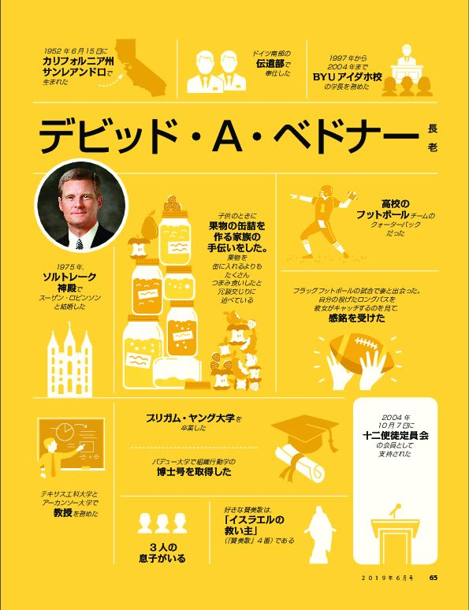
かつて，ある有名な軍司令官が熱意を込めてこう述べました。「決して恐れに聞き従ってはならない。」
今日世界中で起きている事柄について考えるとき，わたしたちは人生において物事がこれまでずっと望んできたのとはまったく違う展開になるのではないかと恐れ，ためらい，疑問に思うのに十分な理由を見いだすかもしれません。
皆さんの中には，物質的および霊的に成功を収めるだけの能力が自分にはないのではないかと疑問に思い，自信をなくす人もいるかもしれません。あるいは，主の約束に基づく助けや導きが，ほかの多くの人の生活には容易に認められるのに，自身の生活にも同様に得られるのかと不安に思うかもしれません。物事がどのように展開していくか，前もってすべてを詳細に知ることはできないために，チャンスをつかんで突き進むことに確信を持てずにいるかもしれません。そのため，その道に一歩足を踏み出すのをためらうのです。あるいは，失敗するのが不安なあまりに，信仰を持って行動し力強く進むことができず，まさに恐れているとおりに失敗するに違いないという思い込みがますます強くなっているかもしれません。
恐れに聞き従わないとは，簡潔に言うと，恐れと不安に任せて人生の進路を決めないということです。恐れや不安がわたしたちの態度や行動に否定的な影響を及ぼしたり，重要な決定に不正に作用したりしないこと，恐れや不安によってこの世のすべての徳高いこと，好ましいこと，称賛に値することから遠ざからないことです。恐れに聞き従わないとは，主イエス・キリストを信じる信仰によって恐れを退け，キリストを確固として信じて力強く進むことです。恐れに聞き従わないとは，神の導きや保証，人生における神のタイミングを信頼することです。わたしたち一人一人が恐れに聞き従わないようになると，導きや守り，永続する喜びといった祝福がもたらされることを約束します。
キリストを信じる信仰を働かせて主の約束を信頼するとき，歩む道を照らしていただけるという絶対的な確信を持って暗闇に足を踏み出すことができます。その光は少なくとも次の一歩を踏み出すのに十分なだけ先を照らし，それから次の一歩，また次の一歩と行く先を照らしてくれるのです。
ジョセフ・スミスはこう宣言しています。「わたしたちが忠実であれば，何も恐れる必要はありません。」
トーマス・S・モンソン大管長（1927－2018年）は次のように勧告しています。「恐れてはなりません。元気を出してください。未来は皆さんの信仰と同じく希望に満ちています。」
皆さんが信仰を持って未来に向かうとき，皆さんの義にかなった働きにおいて，また生涯にわたって，救い主は皆さんに先立って行かれ，右にも左にもいてくださいます。そして主の御霊が皆さんの心の中にあることでしょう（教義と聖約84：88参照）。
1952年6月15日にカリフォルニア州サンレアンドロで生まれた。
子供のときに果物の缶詰を作る家族の手伝いをした。果物を缶に入れるよりもたくさんつまみ食いしたと冗談交じりに述べている。
高校のフットボールチームのクォーターバックだった。
ドイツ南部の伝道部で奉仕した。
フラッグフットボールの試合で妻と出会った。自分の投げたロングパスを彼女がキャッチするのを見て，感銘を受けた。
1975年，ソルトレーク神殿でスーザン・ロビンソンと結婚した。
ブリガム・ヤング大学を卒業した。
パデュー大学で組織行動学の博士号を取得した。
テキサス工科大学とアーカンソー大学で教授を務めた。
1997年から2004年までBYUアイダホ校の学長を務めた。
2004年10月7日に十二使徒定員会の会員として支持された。
3人の息子がいる。
好きな賛美歌は，「イスラエルの救い主」（『賛美歌』4番）である。